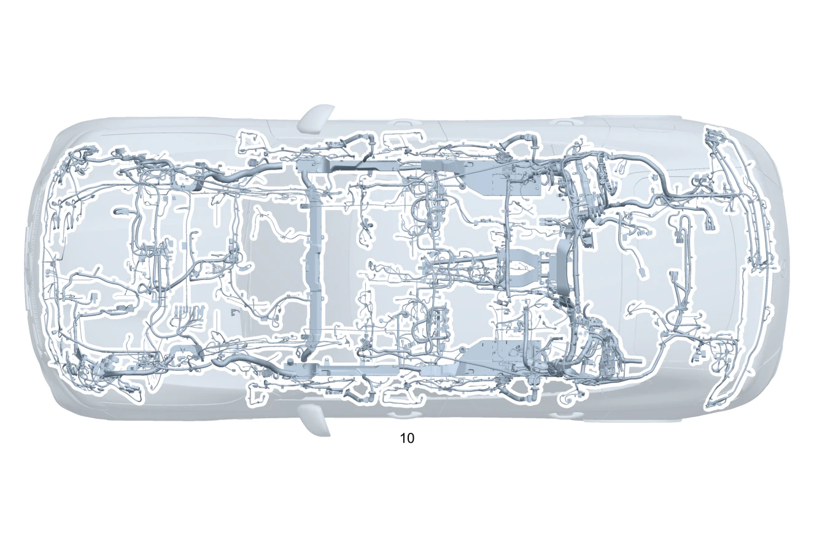

| № | Артикул | Название | Кол. | Примечание | Ограничение |
|---|---|---|---|---|---|
| 10 | A 254 540 66 27 | Электрический жгут (ELECTRICAL WIRING HARNESS) | 1 | Основной жгут электропроводки системы рамы и пола [-] В жгуте проводов предусмотрена возможность подключения соответствующих дополнительных опций согласно производственному номеру а/м [-] При заказе указать идент. номер | |
| 10 | A 254 540 67 27 | Электрический жгут | 1 | Основной жгут электропроводки системы рамы и пола [-] В жгуте проводов предусмотрена возможность подключения соответствующих дополнительных опций согласно производственному номеру а/м [-] При заказе указать идент. номер | 700 |
| 20 | Q 000000000002 | - Возможен заказ только отдельных компонентов жгута проводов | 1 | Провод электропитания ESP® Рулевое управление: Влево | |
| 20 | Q 000000000002 | - Возможен заказ только отдельных компонентов жгута проводов | 1 | Провод электропитания ESP® Рулевое управление: Вправо | |
| 20 | Q 000000000002 | - Возможен заказ только отдельных компонентов жгута проводов | 1 | Датчик ESP Рулевое управление: Влево | |
| 20 | Q 000000000002 | - Возможен заказ только отдельных компонентов жгута проводов | 1 | Датчик ESP Рулевое управление: Вправо | |
| 20 | Q 000000000002 | - Возможен заказ только отдельных компонентов жгута проводов | 1 | Натяжитель ремня безопасности Рулевое управление: Влево | |
| 20 | Q 000000000002 | - Возможен заказ только отдельных компонентов жгута проводов | 1 | Натяжитель ремня безопасности Рулевое управление: Вправо | |
| 20 | Q 000000000002 | - Возможен заказ только отдельных компонентов жгута проводов | 1 | Натяжитель ремня безопасности Рулевое управление: Влево | 299 |
| 20 | Q 000000000002 | - Возможен заказ только отдельных компонентов жгута проводов | 1 | Натяжитель ремня безопасности Рулевое управление: Вправо | 299 |
| 20 | Q 000000000002 | - Возможен заказ только отдельных компонентов жгута проводов | 1 | Натяжитель ремня безопасности Рулевое управление: Влево | 299+(494/460) |
| 20 | Q 000000000002 | - Возможен заказ только отдельных компонентов жгута проводов | 1 | Подушка безопасности в сиденье переднего пассажира Рулевое управление: Влево | 460/494/498/835/555+(460/494) |
| 20 | Q 000000000002 | - Возможен заказ только отдельных компонентов жгута проводов | 1 | Подушка безопасности в сиденье переднего пассажира Рулевое управление: Вправо | 460/494/498/835/555+(460/494) |
| 20 | Q 000000000002 | - Возможен заказ только отдельных компонентов жгута проводов | 1 | Подушка безопасности в сиденье переднего пассажира Рулевое управление: Влево | |
| 20 | Q 000000000002 | - Возможен заказ только отдельных компонентов жгута проводов | 1 | Подушка безопасности в сиденье переднего пассажира Рулевое управление: Вправо | |
| 20 | Q 000000000002 | - Возможен заказ только отдельных компонентов жгута проводов | 1 | Подушка безопасности в сиденье водителя Рулевое управление: Влево | (460/494) |
| 20 | Q 000000000002 | - Возможен заказ только отдельных компонентов жгута проводов | 1 | Подушка безопасности в сиденье водителя Рулевое управление: Влево | |
| 20 | Q 000000000002 | - Возможен заказ только отдельных компонентов жгута проводов | 1 | Подушка безопасности в сиденье водителя Рулевое управление: Вправо | |
| 20 | Q 000000000002 | - Возможен заказ только отдельных компонентов жгута проводов | 1 | Центральная подушка безопасности Рулевое управление: Влево | 325 |
| 20 | Q 000000000002 | - Возможен заказ только отдельных компонентов жгута проводов | 1 | Центральная подушка безопасности Рулевое управление: Вправо | 325 |
| 20 | Q 000000000002 | - Возможен заказ только отдельных компонентов жгута проводов | 1 | Система "PRE\-SAVE" для боковых столкновений Рулевое управление: Влево | 292 |
| 20 | Q 000000000002 | - Возможен заказ только отдельных компонентов жгута проводов | 1 | Система "PRE\-SAVE" для боковых столкновений Рулевое управление: Вправо | 292 |
| 20 | Q 000000000002 | - Возможен заказ только отдельных компонентов жгута проводов | 1 | Система распознавания занятости сиденья Рулевое управление: Влево | |
| 20 | Q 000000000002 | - Возможен заказ только отдельных компонентов жгута проводов | 1 | Система распознавания занятости сиденья Рулевое управление: Вправо | |
| 20 | Q 000000000002 | - Возможен заказ только отдельных компонентов жгута проводов | 1 | Система распознавания занятости сиденья Рулевое управление: Влево | U10 |
| 20 | Q 000000000002 | - Возможен заказ только отдельных компонентов жгута проводов | 1 | Система распознавания занятости сиденья Рулевое управление: Вправо | U10 |
| 20 | Q 000000000002 | - Возможен заказ только отдельных компонентов жгута проводов | 1 | Подушка безопасности Рулевое управление: Влево | (01T/U10/ME10/(382/383/384)+(521/525/528)) |
| 20 | Q 000000000002 | - Возможен заказ только отдельных компонентов жгута проводов | 1 | Подушка безопасности Рулевое управление: Влево | (01T/U10/ME10/(382)+(528)) |
| 20 | Q 000000000002 | - Возможен заказ только отдельных компонентов жгута проводов | 1 | Подушка безопасности Рулевое управление: Вправо | (01T/U10/ME10/(382/383/384)+(521/525/528)) |
| 20 | Q 000000000002 | - Возможен заказ только отдельных компонентов жгута проводов | 1 | Подушка безопасности Рулевое управление: Вправо | (01T/U10/ME10/(382)+(528)) |
| 20 | Q 000000000002 | - Возможен заказ только отдельных компонентов жгута проводов | 1 | Подушка безопасности Рулевое управление: Влево | 01T/U10/ME10/(383/384)+(521/525/528) |
| 20 | Q 000000000002 | - Возможен заказ только отдельных компонентов жгута проводов | 1 | Подушка безопасности Рулевое управление: Вправо | 01T/U10/ME10/(383/384)+(521/525/528) |
| 20 | Q 000000000002 | - Возможен заказ только отдельных компонентов жгута проводов | 1 | Замок ремня безопасности, заднее сиденье Рулевое управление: Влево | U01/U23 |
| 20 | Q 000000000002 | - Возможен заказ только отдельных компонентов жгута проводов | 1 | Замок ремня безопасности, заднее сиденье Рулевое управление: Вправо | U01/U23 |
| 20 | Q 000000000002 | - Возможен заказ только отдельных компонентов жгута проводов | 1 | Защита пешеходов Рулевое управление: Влево | U60 |
| 20 | Q 000000000002 | - Возможен заказ только отдельных компонентов жгута проводов | 1 | Защита пешеходов Рулевое управление: Вправо | U60 |
| 20 | Q 000000000002 | - Возможен заказ только отдельных компонентов жгута проводов | 1 | Акустический генератор Рулевое управление: Влево | B53 |
| 20 | Q 000000000002 | - Возможен заказ только отдельных компонентов жгута проводов | 1 | Акустический генератор Рулевое управление: Влево | B53 |
| 20 | Q 000000000002 | - Возможен заказ только отдельных компонентов жгута проводов | 1 | Акустический генератор Рулевое управление: Вправо | B53 |
| 20 | Q 000000000002 | - Возможен заказ только отдельных компонентов жгута проводов | 1 | Акустический генератор Рулевое управление: Вправо | B53 |
| 20 | Q 000000000002 | - Возможен заказ только отдельных компонентов жгута проводов | 1 | Пневмоподвеска Рулевое управление: Влево | 489 |
| 20 | Q 000000000002 | - Возможен заказ только отдельных компонентов жгута проводов | 1 | Пневмоподвеска Рулевое управление: Вправо | 489 |
| 20 | Q 000000000002 | - Возможен заказ только отдельных компонентов жгута проводов | 1 | Система контроля давления в шинах (RDK) Рулевое управление: Влево | 475 |
| 20 | Q 000000000002 | - Возможен заказ только отдельных компонентов жгута проводов | 1 | Система контроля давления в шинах (RDK) Рулевое управление: Вправо | 475 |
| 20 | Q 000000000002 | - Возможен заказ только отдельных компонентов жгута проводов | 1 | Базовый объём (а/м с гибридной силовой установкой) Рулевое управление: Влево | B01 |
| 20 | Q 000000000002 | - Возможен заказ только отдельных компонентов жгута проводов | 1 | Базовый объём (а/м с гибридной силовой установкой) Рулевое управление: Вправо | B01 |
| 20 | Q 000000000002 | - Возможен заказ только отдельных компонентов жгута проводов | 1 | Система управления АКБ Рулевое управление: Влево | B01 |
| 20 | Q 000000000002 | - Возможен заказ только отдельных компонентов жгута проводов | 1 | Система управления АКБ Рулевое управление: Вправо | B01 |
| 20 | Q 000000000002 | - Возможен заказ только отдельных компонентов жгута проводов | 1 | Система управления АКБ Рулевое управление: Влево | (B01+(1U2/123+1U2))/(M256+B01+M016+(1U2/123+1U2)) |
| 20 | Q 000000000002 | - Возможен заказ только отдельных компонентов жгута проводов | 1 | Система управления АКБ Рулевое управление: Влево | B01+1U2/M256+B01+M016+1U2 |
| 20 | Q 000000000002 | - Возможен заказ только отдельных компонентов жгута проводов | 1 | Система управления АКБ Рулевое управление: Вправо | (B01+(1U2/123+1U2))/(M256+B01+M016+(1U2/123+1U2)) |
| 20 | Q 000000000002 | - Возможен заказ только отдельных компонентов жгута проводов | 1 | Система управления АКБ Рулевое управление: Вправо | B01+1U2/M256+B01+M016+1U2 |
| 20 | Q 000000000002 | - Возможен заказ только отдельных компонентов жгута проводов | 1 | Базовый объём для двигателя Рулевое управление: Влево | M654/M656 |
| 20 | Q 000000000002 | - Возможен заказ только отдельных компонентов жгута проводов | 1 | Базовый объём для двигателя Рулевое управление: Вправо | M654/M656 |
| 20 | Q 000000000002 | - Возможен заказ только отдельных компонентов жгута проводов | 1 | Трансмиссия CPC Рулевое управление: Влево | |
| 20 | Q 000000000002 | - Возможен заказ только отдельных компонентов жгута проводов | 1 | Трансмиссия CPC Рулевое управление: Вправо | |
| 20 | Q 000000000002 | - Возможен заказ только отдельных компонентов жгута проводов | 1 | Трансмиссия CPC Рулевое управление: Влево | (123+805/806/807/808)+1U2 |
| 20 | Q 000000000002 | - Возможен заказ только отдельных компонентов жгута проводов | 1 | Трансмиссия CPC Рулевое управление: Влево | 1U2 |
| 20 | Q 000000000002 | - Возможен заказ только отдельных компонентов жгута проводов | 1 | Трансмиссия CPC Рулевое управление: Вправо | (123+805/806/807/808)+1U2 |
| 20 | Q 000000000002 | - Возможен заказ только отдельных компонентов жгута проводов | 1 | Трансмиссия CPC Рулевое управление: Вправо | 1U2 |
| 20 | Q 000000000002 | - Возможен заказ только отдельных компонентов жгута проводов | 1 | Трансмиссия CPC Рулевое управление: Влево | 2U1/ME10/M139 |
| 20 | Q 000000000002 | - Возможен заказ только отдельных компонентов жгута проводов | 1 | Трансмиссия CPC Рулевое управление: Влево | 2U1/ME10 |
| 20 | Q 000000000002 | - Возможен заказ только отдельных компонентов жгута проводов | 1 | Трансмиссия CPC Рулевое управление: Вправо | 2U1/ME10/M139 |
| 20 | Q 000000000002 | - Возможен заказ только отдельных компонентов жгута проводов | 1 | Трансмиссия CPC Рулевое управление: Вправо | 2U1/ME10 |
| 20 | Q 000000000002 | - Возможен заказ только отдельных компонентов жгута проводов | 1 | Трансмиссия CPC Рулевое управление: Влево | (123+805/806/807/808)+(2U1/ME10)+1U2 |
| 20 | Q 000000000002 | - Возможен заказ только отдельных компонентов жгута проводов | 1 | Трансмиссия CPC Рулевое управление: Влево | ((123+805/806/807/808)+(2U1/ME10)+1U2)/(M256+M016+1U2+123) |
| 20 | Q 000000000002 | - Возможен заказ только отдельных компонентов жгута проводов | 1 | Трансмиссия CPC Рулевое управление: Влево | ((123+805/806/807/808)+(2U1/ME10)+1U2)/(M256+M016+1U2) |
| 20 | Q 000000000002 | - Возможен заказ только отдельных компонентов жгута проводов | 1 | Трансмиссия CPC Рулевое управление: Влево | ((2U1/ME10)+1U2)/(M256+M016+1U2) |
| 20 | Q 000000000002 | - Возможен заказ только отдельных компонентов жгута проводов | 1 | Трансмиссия CPC Рулевое управление: Влево | ((2U1/ME10)+1U2) |
| 20 | Q 000000000002 | - Возможен заказ только отдельных компонентов жгута проводов | 1 | Трансмиссия CPC Рулевое управление: Вправо | (123+805/806/807/808)+(2U1/ME10)+1U2 |
| 20 | Q 000000000002 | - Возможен заказ только отдельных компонентов жгута проводов | 1 | Трансмиссия CPC Рулевое управление: Вправо | ((123+805/806/807/808)+(2U1/ME10)+1U2)/(M256+M016+1U2+123) |
| 20 | Q 000000000002 | - Возможен заказ только отдельных компонентов жгута проводов | 1 | Трансмиссия CPC Рулевое управление: Вправо | ((123+805/806/807/808)+(2U1/ME10)+1U2)/(M256+M016+1U2) |
| 20 | Q 000000000002 | - Возможен заказ только отдельных компонентов жгута проводов | 1 | Трансмиссия CPC Рулевое управление: Вправо | ((2U1/ME10)+1U2)/(M256+M016+1U2) |
| 20 | Q 000000000002 | - Возможен заказ только отдельных компонентов жгута проводов | 1 | Трансмиссия CPC Рулевое управление: Вправо | ((2U1/ME10)+1U2) |
| 20 | Q 000000000002 | - Возможен заказ только отдельных компонентов жгута проводов | 1 | Ведущий процессор Движение и зарядка Рулевое управление: Влево | 1U2/(M256+M016+1U2) |
| 20 | Q 000000000002 | - Возможен заказ только отдельных компонентов жгута проводов | 1 | Ведущий процессор Движение и зарядка Рулевое управление: Вправо | 1U2/(M256+M016+1U2) |
| 20 | Q 000000000002 | - Возможен заказ только отдельных компонентов жгута проводов | 1 | Связь LIN CEPC 1 Рулевое управление: Влево | |
| 20 | Q 000000000002 | - Возможен заказ только отдельных компонентов жгута проводов | 1 | Связь LIN CEPC 1 Рулевое управление: Вправо | |
| 20 | Q 000000000002 | - Возможен заказ только отдельных компонентов жгута проводов | 1 | Связь LIN CEPC 1 Рулевое управление: Влево | (123+805/806/807/808)+1U2 |
| 20 | Q 000000000002 | - Возможен заказ только отдельных компонентов жгута проводов | 1 | Связь LIN CEPC 1 Рулевое управление: Влево | ((123+805/806/807/808)+1U2)/(M256+M016+1U2+123) |
| 20 | Q 000000000002 | - Возможен заказ только отдельных компонентов жгута проводов | 1 | Связь LIN CEPC 1 Рулевое управление: Влево | ((805/806/807/808)+1U2)/(M256+M016+1U2+123) |
| 20 | Q 000000000002 | - Возможен заказ только отдельных компонентов жгута проводов | 1 | Связь LIN CEPC 1 Рулевое управление: Влево | ((805/806/807/808)+1U2)/(M256+M016+1U2) |
| 20 | Q 000000000002 | - Возможен заказ только отдельных компонентов жгута проводов | 1 | Связь LIN CEPC 1 Рулевое управление: Влево | 1U2/(M256+M016+1U2) |
| 20 | Q 000000000002 | - Возможен заказ только отдельных компонентов жгута проводов | 1 | Связь LIN CEPC 1 Рулевое управление: Вправо | (123+805/806/807/808)+1U2 |
| 20 | Q 000000000002 | - Возможен заказ только отдельных компонентов жгута проводов | 1 | Связь LIN CEPC 1 Рулевое управление: Вправо | ((123+805/806/807/808)+1U2)/(M256+M016+1U2+123) |
| 20 | Q 000000000002 | - Возможен заказ только отдельных компонентов жгута проводов | 1 | Связь LIN CEPC 1 Рулевое управление: Вправо | ((805/806/807/808)+1U2)/(M256+M016+1U2+123) |
| 20 | Q 000000000002 | - Возможен заказ только отдельных компонентов жгута проводов | 1 | Связь LIN CEPC 1 Рулевое управление: Вправо | ((805/806/807/808)+1U2)/(M256+M016+1U2) |
| 20 | Q 000000000002 | - Возможен заказ только отдельных компонентов жгута проводов | 1 | Связь LIN CEPC 1 Рулевое управление: Вправо | 1U2/(M256+M016+1U2) |
| 20 | Q 000000000002 | - Возможен заказ только отдельных компонентов жгута проводов | 1 | Связь LIN CEPC 1 Рулевое управление: Влево | 2U1/ME10/M139/01T |
| 20 | Q 000000000002 | - Возможен заказ только отдельных компонентов жгута проводов | 1 | Связь LIN CEPC 1 Рулевое управление: Влево | 2U1/ME10/01T |
| 20 | Q 000000000002 | - Возможен заказ только отдельных компонентов жгута проводов | 1 | Связь LIN CEPC 1 Рулевое управление: Вправо | 2U1/ME10/M139/01T |
| 20 | Q 000000000002 | - Возможен заказ только отдельных компонентов жгута проводов | 1 | Связь LIN CEPC 1 Рулевое управление: Вправо | 2U1/ME10/01T |
| 20 | Q 000000000002 | - Возможен заказ только отдельных компонентов жгута проводов | 1 | Связь LIN CEPC 1 Рулевое управление: Влево | (123+805/806/807/808)+(2U1/ME10/01T)+1U2 |
| 20 | Q 000000000002 | - Возможен заказ только отдельных компонентов жгута проводов | 1 | Связь LIN CEPC 1 Рулевое управление: Влево | (805/806/807/808)+(2U1/ME10/01T)+1U2 |
| 20 | Q 000000000002 | - Возможен заказ только отдельных компонентов жгута проводов | 1 | Связь LIN CEPC 1 Рулевое управление: Влево | (805/806/807/808)+(2U1/ME10/01T)+1U2/(2U1/01T)+(M256+M016+1U2) |
| 20 | Q 000000000002 | - Возможен заказ только отдельных компонентов жгута проводов | 1 | Связь LIN CEPC 1 Рулевое управление: Влево | (2U1/ME10/01T)+1U2/(2U1/01T)+(M256+M016+1U2) |
| 20 | Q 000000000002 | - Возможен заказ только отдельных компонентов жгута проводов | 1 | Связь LIN CEPC 1 Рулевое управление: Вправо | (123+805/806/807/808)+(2U1/ME10/01T)+1U2 |
| 20 | Q 000000000002 | - Возможен заказ только отдельных компонентов жгута проводов | 1 | Связь LIN CEPC 1 Рулевое управление: Вправо | (805/806/807/808)+(2U1/ME10/01T)+1U2 |
| 20 | Q 000000000002 | - Возможен заказ только отдельных компонентов жгута проводов | 1 | Связь LIN CEPC 1 Рулевое управление: Вправо | (805/806/807/808)+(2U1/ME10/01T)+1U2/(2U1/01T)+(M256+M016+1U2) |
| 20 | Q 000000000002 | - Возможен заказ только отдельных компонентов жгута проводов | 1 | Связь LIN CEPC 1 Рулевое управление: Вправо | (2U1/ME10/01T)+1U2/(2U1/01T)+(M256+M016+1U2) |
| 20 | Q 000000000002 | - Возможен заказ только отдельных компонентов жгута проводов | 1 | Датчик температуры охлаждающей жидкости Рулевое управление: Влево | B01/M139+B01 |
| 20 | Q 000000000002 | - Возможен заказ только отдельных компонентов жгута проводов | 1 | Датчик температуры охлаждающей жидкости Рулевое управление: Влево | B01 |
| 20 | Q 000000000002 | - Возможен заказ только отдельных компонентов жгута проводов | 1 | Датчик температуры охлаждающей жидкости Рулевое управление: Вправо | B01/M139+B01 |
| 20 | Q 000000000002 | - Возможен заказ только отдельных компонентов жгута проводов | 1 | Датчик температуры охлаждающей жидкости Рулевое управление: Вправо | B01 |
| 20 | Q 000000000002 | - Возможен заказ только отдельных компонентов жгута проводов | 1 | Датчик температуры охлаждающей жидкости Рулевое управление: Влево | (123+805/806/807/808)+(B01/ME10)+1U2 |
| 20 | Q 000000000002 | - Возможен заказ только отдельных компонентов жгута проводов | 1 | Датчик температуры охлаждающей жидкости Рулевое управление: Влево | (123+805/806/807/808)+(B01/ME10)+1U2/(M256+M016+1U2) |
| 20 | Q 000000000002 | - Возможен заказ только отдельных компонентов жгута проводов | 1 | Датчик температуры охлаждающей жидкости Рулевое управление: Влево | (B01/ME10)+1U2/(M256+M016+1U2) |
| 20 | Q 000000000002 | - Возможен заказ только отдельных компонентов жгута проводов | 1 | Датчик температуры охлаждающей жидкости Рулевое управление: Влево | (B01/ME10)+1U2 |
| 20 | Q 000000000002 | - Возможен заказ только отдельных компонентов жгута проводов | 1 | Датчик температуры охлаждающей жидкости Рулевое управление: Вправо | (123+805/806/807/808)+(B01/ME10)+1U2 |
| 20 | Q 000000000002 | - Возможен заказ только отдельных компонентов жгута проводов | 1 | Датчик температуры охлаждающей жидкости Рулевое управление: Вправо | (123+805/806/807/808)+(B01/ME10)+1U2/(M256+M016+1U2) |
| 20 | Q 000000000002 | - Возможен заказ только отдельных компонентов жгута проводов | 1 | Датчик температуры охлаждающей жидкости Рулевое управление: Вправо | (B01/ME10)+1U2/(M256+M016+1U2) |
| 20 | Q 000000000002 | - Возможен заказ только отдельных компонентов жгута проводов | 1 | Датчик температуры охлаждающей жидкости Рулевое управление: Вправо | (B01/ME10)+1U2 |
| 20 | Q 000000000002 | - Возможен заказ только отдельных компонентов жгута проводов | 1 | Датчик температуры охлаждающей жидкости Рулевое управление: Влево | B01 |
| 20 | Q 000000000002 | - Возможен заказ только отдельных компонентов жгута проводов | 1 | Датчик температуры охлаждающей жидкости Рулевое управление: Вправо | B01 |
| 20 | Q 000000000002 | - Возможен заказ только отдельных компонентов жгута проводов | 1 | Датчик температуры охлаждающей жидкости Рулевое управление: Влево | (805/806/807)+B01 |
| 20 | Q 000000000002 | - Возможен заказ только отдельных компонентов жгута проводов | 1 | Датчик температуры охлаждающей жидкости Рулевое управление: Влево | B01 |
| 20 | Q 000000000002 | - Возможен заказ только отдельных компонентов жгута проводов | 1 | Датчик температуры охлаждающей жидкости Рулевое управление: Вправо | (805/806/807)+B01 |
| 20 | Q 000000000002 | - Возможен заказ только отдельных компонентов жгута проводов | 1 | Датчик температуры охлаждающей жидкости Рулевое управление: Вправо | B01 |
| 20 | Q 000000000002 | - Возможен заказ только отдельных компонентов жгута проводов | 1 | Датчик температуры охлаждающей жидкости Рулевое управление: Влево | (123+805/806/807/808)+B01+1U2 |
| 20 | Q 000000000002 | - Возможен заказ только отдельных компонентов жгута проводов | 1 | Датчик температуры охлаждающей жидкости Рулевое управление: Влево | B01+1U2 |
| 20 | Q 000000000002 | - Возможен заказ только отдельных компонентов жгута проводов | 1 | Датчик температуры охлаждающей жидкости Рулевое управление: Вправо | (123+805/806/807/808)+B01+1U2 |
| 20 | Q 000000000002 | - Возможен заказ только отдельных компонентов жгута проводов | 1 | Датчик температуры охлаждающей жидкости Рулевое управление: Вправо | B01+1U2 |
| 20 | Q 000000000002 | - Возможен заказ только отдельных компонентов жгута проводов | 1 | Жалюзи радиатора вверху Рулевое управление: Влево | 2U1/(M139+B01+2U1) |
| 20 | Q 000000000002 | - Возможен заказ только отдельных компонентов жгута проводов | 1 | Жалюзи радиатора вверху Рулевое управление: Влево | (2U1/(M139+B01+2U1))/(M256+M016+1U2+123+2U1) |
| 20 | Q 000000000002 | - Возможен заказ только отдельных компонентов жгута проводов | 1 | Жалюзи радиатора вверху Рулевое управление: Влево | (2U1/(M139+B01+2U1))/(M256+M016+1U2+2U1) |
| 20 | Q 000000000002 | - Возможен заказ только отдельных компонентов жгута проводов | 1 | Жалюзи радиатора вверху Рулевое управление: Влево | 2U1/M256+M016+1U2+2U1 |
| 20 | Q 000000000002 | - Возможен заказ только отдельных компонентов жгута проводов | 1 | Жалюзи радиатора вверху Рулевое управление: Вправо | 2U1/(M139+B01+2U1) |
| 20 | Q 000000000002 | - Возможен заказ только отдельных компонентов жгута проводов | 1 | Жалюзи радиатора вверху Рулевое управление: Вправо | (2U1/(M139+B01+2U1))/(M256+M016+1U2+123+2U1) |
| 20 | Q 000000000002 | - Возможен заказ только отдельных компонентов жгута проводов | 1 | Жалюзи радиатора вверху Рулевое управление: Вправо | (2U1/(M139+B01+2U1))/(M256+M016+1U2+2U1) |
| 20 | Q 000000000002 | - Возможен заказ только отдельных компонентов жгута проводов | 1 | Жалюзи радиатора вверху Рулевое управление: Вправо | 2U1/M256+M016+1U2+2U1 |
| 20 | Q 000000000002 | - Возможен заказ только отдельных компонентов жгута проводов | 1 | Датчик оксидов азота Рулевое управление: Влево | (M654/M656)+972 |
| 20 | Q 000000000002 | - Возможен заказ только отдельных компонентов жгута проводов | 1 | Датчик оксидов азота Рулевое управление: Влево | (M654/M656)+972 |
| 20 | Q 000000000002 | - Возможен заказ только отдельных компонентов жгута проводов | 1 | Датчик оксидов азота Рулевое управление: Вправо | (M654/M656)+972 |
| 20 | Q 000000000002 | - Возможен заказ только отдельных компонентов жгута проводов | 1 | Датчик оксидов азота Рулевое управление: Вправо | (M654/M656)+972 |
| 20 | Q 000000000002 | - Возможен заказ только отдельных компонентов жгута проводов | 1 | Датчик оксидов азота Рулевое управление: Влево | (M654/M656)+(1U2/972+1U2) |
| 20 | Q 000000000002 | - Возможен заказ только отдельных компонентов жгута проводов | 1 | Датчик оксидов азота Рулевое управление: Вправо | (M654/M656)+(1U2/972+1U2) |
| 20 | Q 000000000002 | - Возможен заказ только отдельных компонентов жгута проводов | 1 | Датчик сажи Рулевое управление: Влево | (M654/M656)+1U2 |
| 20 | Q 000000000002 | - Возможен заказ только отдельных компонентов жгута проводов | 1 | Датчик сажи Рулевое управление: Вправо | (M654/M656)+1U2 |
| 20 | Q 000000000002 | - Возможен заказ только отдельных компонентов жгута проводов | 1 | Кузов CAN 1 Рулевое управление: Влево | |
| 20 | Q 000000000002 | - Возможен заказ только отдельных компонентов жгута проводов | 1 | Кузов CAN 1 Рулевое управление: Влево | 896 |
| 20 | Q 000000000002 | - Возможен заказ только отдельных компонентов жгута проводов | 1 | Кузов CAN 1 Рулевое управление: Вправо | 896 |
| 20 | Q 000000000002 | - Возможен заказ только отдельных компонентов жгута проводов | 1 | Шина данных CAN KEYLESS\-GO Рулевое управление: Влево | 896 |
| 20 | Q 000000000002 | - Возможен заказ только отдельных компонентов жгута проводов | 1 | Шина данных CAN KEYLESS\-GO Рулевое управление: Вправо | 896 |
| 20 | Q 000000000002 | - Возможен заказ только отдельных компонентов жгута проводов | 1 | Кузов CAN 2 Рулевое управление: Влево | 399/409 |
| 20 | Q 000000000002 | - Возможен заказ только отдельных компонентов жгута проводов | 1 | Кузов CAN 2 Рулевое управление: Вправо | 399/409 |
| 20 | Q 000000000002 | - Возможен заказ только отдельных компонентов жгута проводов | 1 | Кузов CAN 2 Рулевое управление: Влево | (399/409)+(873/401) |
| 20 | Q 000000000002 | - Возможен заказ только отдельных компонентов жгута проводов | 1 | Кузов CAN 2 Рулевое управление: Вправо | (399/409)+(873/401) |
| 20 | Q 000000000002 | - Возможен заказ только отдельных компонентов жгута проводов | 1 | Кузов CAN 2 Рулевое управление: Влево | (399/409)+(873/401)+872 |
| 20 | Q 000000000002 | - Возможен заказ только отдельных компонентов жгута проводов | 1 | Кузов CAN 2 Рулевое управление: Вправо | (399/409)+(873/401)+872 |
| 20 | Q 000000000002 | - Возможен заказ только отдельных компонентов жгута проводов | 1 | Кузов CAN 2 Рулевое управление: Влево | 873/401 |
| 20 | Q 000000000002 | - Возможен заказ только отдельных компонентов жгута проводов | 1 | Кузов CAN 2 Рулевое управление: Вправо | 873/401 |
| 20 | Q 000000000002 | - Возможен заказ только отдельных компонентов жгута проводов | 1 | Кузов CAN 2 Рулевое управление: Влево | 872+(873/401) |
| 20 | Q 000000000002 | - Возможен заказ только отдельных компонентов жгута проводов | 1 | Кузов CAN 2 Рулевое управление: Вправо | 872+(873/401) |
| 20 | Q 000000000002 | - Возможен заказ только отдельных компонентов жгута проводов | 1 | Кузов CAN 2 Рулевое управление: Влево | (221/241)+(222/242)/(873/401)+(221/241)+(222/242) |
| 20 | Q 000000000002 | - Возможен заказ только отдельных компонентов жгута проводов | 1 | Кузов CAN 2 Рулевое управление: Вправо | (221/241)+(222/242)/(873/401)+(221/241)+(222/242) |
| 20 | Q 000000000002 | - Возможен заказ только отдельных компонентов жгута проводов | 1 | Кузов CAN 2 Рулевое управление: Влево | 872+(873/401)+(221/241)+(222/242) |
| 20 | Q 000000000002 | - Возможен заказ только отдельных компонентов жгута проводов | 1 | Кузов CAN 2 Рулевое управление: Влево | 872+(873/401)+(221/241)+(222/242) |
| 20 | Q 000000000002 | - Возможен заказ только отдельных компонентов жгута проводов | 1 | Кузов CAN 2 Рулевое управление: Вправо | 872+(873/401)+(221/241)+(222/242) |
| 20 | Q 000000000002 | - Возможен заказ только отдельных компонентов жгута проводов | 1 | Кузов CAN 2 Рулевое управление: Вправо | 872+(873/401)+(221/241)+(222/242) |
| 20 | Q 000000000002 | - Возможен заказ только отдельных компонентов жгута проводов | 1 | Кузов CAN 2 Рулевое управление: Влево | (399/409)+((221/241)+(222/242)/(873/401)+(221/241)+(222/242)) |
| 20 | Q 000000000002 | - Возможен заказ только отдельных компонентов жгута проводов | 1 | Кузов CAN 2 Рулевое управление: Вправо | (399/409)+((221/241)+(222/242)/(873/401)+(221/241)+(222/242)) |
| 20 | Q 000000000002 | - Возможен заказ только отдельных компонентов жгута проводов | 1 | Кузов CAN 2 Рулевое управление: Влево | (399/409)+872+(873/401)+(221/241)+(222/242) |
| 20 | Q 000000000002 | - Возможен заказ только отдельных компонентов жгута проводов | 1 | Кузов CAN 2 Рулевое управление: Вправо | (399/409)+872+(873/401)+(221/241)+(222/242) |
| 20 | Q 000000000002 | - Возможен заказ только отдельных компонентов жгута проводов | 1 | Головное устройство: шина данных CAN 1 (базовый объём) Рулевое управление: Влево | 521/525/528 |
| 20 | Q 000000000002 | - Возможен заказ только отдельных компонентов жгута проводов | 1 | Головное устройство: шина данных CAN 1 (базовый объём) Рулевое управление: Влево | 528 |
| 20 | Q 000000000002 | - Возможен заказ только отдельных компонентов жгута проводов | 1 | Головное устройство: шина данных CAN 1 (базовый объём) Рулевое управление: Вправо | 521/525/528 |
| 20 | Q 000000000002 | - Возможен заказ только отдельных компонентов жгута проводов | 1 | Головное устройство: шина данных CAN 1 (базовый объём) Рулевое управление: Вправо | 528 |
| 20 | Q 000000000002 | - Возможен заказ только отдельных компонентов жгута проводов | 1 | Головное устройство: шина данных CAN 2 (базовый объём) Рулевое управление: Влево | 521/525/528 |
| 20 | Q 000000000002 | - Возможен заказ только отдельных компонентов жгута проводов | 1 | Головное устройство: шина данных CAN 2 (базовый объём) Рулевое управление: Влево | 528 |
| 20 | Q 000000000002 | - Возможен заказ только отдельных компонентов жгута проводов | 1 | Головное устройство: шина данных CAN 2 (базовый объём) Рулевое управление: Вправо | 521/525/528 |
| 20 | Q 000000000002 | - Возможен заказ только отдельных компонентов жгута проводов | 1 | Головное устройство: шина данных CAN 2 (базовый объём) Рулевое управление: Вправо | 528 |
| 20 | Q 000000000002 | - Возможен заказ только отдельных компонентов жгута проводов | 1 | Шина данных CAN трансмиссии Рулевое управление: Влево | |
| 20 | Q 000000000002 | - Возможен заказ только отдельных компонентов жгута проводов | 1 | Шина данных CAN трансмиссии Рулевое управление: Вправо | |
| 20 | Q 000000000002 | - Возможен заказ только отдельных компонентов жгута проводов | 1 | Шина данных CAN трансмиссии Рулевое управление: Влево | (123+805/806/807/808)+1U2 |
| 20 | Q 000000000002 | - Возможен заказ только отдельных компонентов жгута проводов | 1 | Шина данных CAN трансмиссии Рулевое управление: Влево | 1U2 |
| 20 | Q 000000000002 | - Возможен заказ только отдельных компонентов жгута проводов | 1 | Шина данных CAN трансмиссии Рулевое управление: Влево | (1U2/1U2+123) |
| 20 | Q 000000000002 | - Возможен заказ только отдельных компонентов жгута проводов | 1 | Шина данных CAN трансмиссии Рулевое управление: Влево | 1U2 |
| 20 | Q 000000000002 | - Возможен заказ только отдельных компонентов жгута проводов | 1 | Шина данных CAN трансмиссии Рулевое управление: Вправо | (123+805/806/807/808)+1U2 |
| 20 | Q 000000000002 | - Возможен заказ только отдельных компонентов жгута проводов | 1 | Шина данных CAN трансмиссии Рулевое управление: Вправо | 1U2 |
| 20 | Q 000000000002 | - Возможен заказ только отдельных компонентов жгута проводов | 1 | Шина данных CAN трансмиссии Рулевое управление: Вправо | (1U2/1U2+123) |
| 20 | Q 000000000002 | - Возможен заказ только отдельных компонентов жгута проводов | 1 | Шина данных CAN трансмиссии Рулевое управление: Вправо | 1U2 |
| 20 | Q 000000000002 | - Возможен заказ только отдельных компонентов жгута проводов | 1 | Шина данных CAN трансмиссии Рулевое управление: Влево | 6U0/M139/B63/B53 |
| 20 | Q 000000000002 | - Возможен заказ только отдельных компонентов жгута проводов | 1 | Шина данных CAN трансмиссии Рулевое управление: Влево | 6U0/B63/B53 |
| 20 | Q 000000000002 | - Возможен заказ только отдельных компонентов жгута проводов | 1 | Шина данных CAN трансмиссии Рулевое управление: Вправо | 6U0/M139/B63/B53 |
| 20 | Q 000000000002 | - Возможен заказ только отдельных компонентов жгута проводов | 1 | Шина данных CAN трансмиссии Рулевое управление: Вправо | 6U0/B63/B53 |
| 20 | Q 000000000002 | - Возможен заказ только отдельных компонентов жгута проводов | 1 | Шина данных CAN трансмиссии Рулевое управление: Влево | (123+805/806/807/808)+(6U0/B63/B53)+1U2 |
| 20 | Q 000000000002 | - Возможен заказ только отдельных компонентов жгута проводов | 1 | Шина данных CAN трансмиссии Рулевое управление: Влево | ((123+805/806/807/808)+(6U0/B63/B53)+1U2)/(M256+M016+1U2+123) |
| 20 | Q 000000000002 | - Возможен заказ только отдельных компонентов жгута проводов | 1 | Шина данных CAN трансмиссии Рулевое управление: Влево | ((123+805/806/807/808)+(6U0/B63/B53)+1U2)/(M256+M016+1U2) |
| 20 | Q 000000000002 | - Возможен заказ только отдельных компонентов жгута проводов | 1 | Шина данных CAN трансмиссии Рулевое управление: Влево | ((6U0/B63/B53)+1U2)/(M256+M016+1U2) |
| 20 | Q 000000000002 | - Возможен заказ только отдельных компонентов жгута проводов | 1 | Шина данных CAN трансмиссии Рулевое управление: Влево | ((6U0/B63/B53)+(1U2/1U2+123))/(M256+M016+(1U2/1U2+123)) |
| 20 | Q 000000000002 | - Возможен заказ только отдельных компонентов жгута проводов | 1 | Шина данных CAN трансмиссии Рулевое управление: Влево | (6U0/B63/B53)+(1U2/1U2+123) |
| 20 | Q 000000000002 | - Возможен заказ только отдельных компонентов жгута проводов | 1 | Шина данных CAN трансмиссии Рулевое управление: Влево | (6U0/B63/B53)+1U2 |
| 20 | Q 000000000002 | - Возможен заказ только отдельных компонентов жгута проводов | 1 | Шина данных CAN трансмиссии Рулевое управление: Вправо | (123+805/806/807/808)+(6U0/B63/B53)+1U2 |
| 20 | Q 000000000002 | - Возможен заказ только отдельных компонентов жгута проводов | 1 | Шина данных CAN трансмиссии Рулевое управление: Вправо | ((123+805/806/807/808)+(6U0/B63/B53)+1U2)/(M256+M016+1U2+123) |
| 20 | Q 000000000002 | - Возможен заказ только отдельных компонентов жгута проводов | 1 | Шина данных CAN трансмиссии Рулевое управление: Вправо | ((123+805/806/807/808)+(6U0/B63/B53)+1U2)/(M256+M016+1U2) |
| 20 | Q 000000000002 | - Возможен заказ только отдельных компонентов жгута проводов | 1 | Шина данных CAN трансмиссии Рулевое управление: Вправо | ((6U0/B63/B53)+1U2)/(M256+M016+1U2) |
| 20 | Q 000000000002 | - Возможен заказ только отдельных компонентов жгута проводов | 1 | Шина данных CAN трансмиссии Рулевое управление: Вправо | ((6U0/B63/B53)+(1U2/1U2+123))/(M256+M016+(1U2/1U2+123)) |
| 20 | Q 000000000002 | - Возможен заказ только отдельных компонентов жгута проводов | 1 | Шина данных CAN трансмиссии Рулевое управление: Вправо | (6U0/B63/B53)+(1U2/1U2+123) |
| 20 | Q 000000000002 | - Возможен заказ только отдельных компонентов жгута проводов | 1 | Шина данных CAN трансмиссии Рулевое управление: Вправо | (6U0/B63/B53)+1U2 |
| 20 | Q 000000000002 | - Возможен заказ только отдельных компонентов жгута проводов | 1 | Шина данных CAN коробки передач Рулевое управление: Влево | 421+M005 |
| 20 | Q 000000000002 | - Возможен заказ только отдельных компонентов жгута проводов | 1 | Шина данных CAN коробки передач Рулевое управление: Вправо | 421+M005 |
| 20 | Q 000000000002 | - Возможен заказ только отдельных компонентов жгута проводов | 1 | Шина данных CAN коробки передач Рулевое управление: Влево | (123+805/806/807/808)+421+M005+1U2 |
| 20 | Q 000000000002 | - Возможен заказ только отдельных компонентов жгута проводов | 1 | Шина данных CAN коробки передач Рулевое управление: Влево | 421+M005+1U2 |
| 20 | Q 000000000002 | - Возможен заказ только отдельных компонентов жгута проводов | 1 | Шина данных CAN коробки передач Рулевое управление: Вправо | (123+805/806/807/808)+421+M005+1U2 |
| 20 | Q 000000000002 | - Возможен заказ только отдельных компонентов жгута проводов | 1 | Шина данных CAN коробки передач Рулевое управление: Вправо | 421+M005+1U2 |
| 20 | Q 000000000002 | - Возможен заказ только отдельных компонентов жгута проводов | 1 | Система управления энергоснабжением, шина данных CAN Рулевое управление: Влево | B01 |
| 20 | Q 000000000002 | - Возможен заказ только отдельных компонентов жгута проводов | 1 | Система управления энергоснабжением, шина данных CAN Рулевое управление: Вправо | B01 |
| 20 | Q 000000000002 | - Возможен заказ только отдельных компонентов жгута проводов | 1 | Система управления энергоснабжением, шина данных CAN Рулевое управление: Влево | (123+805/806/807/808)+B01+1U2 |
| 20 | Q 000000000002 | - Возможен заказ только отдельных компонентов жгута проводов | 1 | Система управления энергоснабжением, шина данных CAN Рулевое управление: Влево | B01+1U2 |
| 20 | Q 000000000002 | - Возможен заказ только отдельных компонентов жгута проводов | 1 | Система управления энергоснабжением, шина данных CAN Рулевое управление: Вправо | (123+805/806/807/808)+B01+1U2 |
| 20 | Q 000000000002 | - Возможен заказ только отдельных компонентов жгута проводов | 1 | Система управления энергоснабжением, шина данных CAN Рулевое управление: Вправо | B01+1U2 |
| 20 | Q 000000000002 | - Возможен заказ только отдельных компонентов жгута проводов | 1 | Сетевое соединение системы управления энергоснабжением, шина данных CAN Рулевое управление: Влево | B01 |
| 20 | Q 000000000002 | - Возможен заказ только отдельных компонентов жгута проводов | 1 | Сетевое соединение системы управления энергоснабжением, шина данных CAN Рулевое управление: Вправо | B01 |
| 20 | Q 000000000002 | - Возможен заказ только отдельных компонентов жгута проводов | 1 | Сетевое соединение системы управления энергоснабжением, шина данных CAN Рулевое управление: Влево | B01+1U2 |
| 20 | Q 000000000002 | - Возможен заказ только отдельных компонентов жгута проводов | 1 | Сетевое соединение системы управления энергоснабжением, шина данных CAN Рулевое управление: Вправо | B01+1U2 |
| 20 | Q 000000000002 | - Возможен заказ только отдельных компонентов жгута проводов | 1 | Шина данных CAN периферийного оборудования Рулевое управление: Влево | |
| 20 | Q 000000000002 | - Возможен заказ только отдельных компонентов жгута проводов | 1 | Шина данных CAN периферийного оборудования Рулевое управление: Вправо | |
| 20 | Q 000000000002 | - Возможен заказ только отдельных компонентов жгута проводов | 1 | Шина данных CAN периферийного оборудования Рулевое управление: Влево | 475 |
| 20 | Q 000000000002 | - Возможен заказ только отдельных компонентов жгута проводов | 1 | Шина данных CAN периферийного оборудования Рулевое управление: Вправо | 475 |
| 20 | Q 000000000002 | - Возможен заказ только отдельных компонентов жгута проводов | 1 | Шина данных CAN периферийного оборудования; FLEXRAY: N118/5*1 \- X25/7*1 Рулевое управление: Влево [402] БОЛЬШЕ НЕ ПОСТАВЛЯЕТСЯ | 6U7 |
| 20 | Q 000000000002 | - Возможен заказ только отдельных компонентов жгута проводов | 1 | Шина данных CAN периферийного оборудования; FLEXRAY: N118/5*1 \- X25/7*1 Рулевое управление: Вправо [402] БОЛЬШЕ НЕ ПОСТАВЛЯЕТСЯ | 6U7 |
| 20 | Q 000000000002 | - Возможен заказ только отдельных компонентов жгута проводов | 1 | Шина данных CAN периферийного оборудования Рулевое управление: Влево | (M654/M656)+1U2 |
| 20 | Q 000000000002 | - Возможен заказ только отдельных компонентов жгута проводов | 1 | Шина данных CAN периферийного оборудования Рулевое управление: Вправо | (M654/M656)+1U2 |
| 20 | Q 000000000002 | - Возможен заказ только отдельных компонентов жгута проводов | 1 | Система контроля мертвых зон Рулевое управление: Влево | 234/262/233/507 |
| 20 | Q 000000000002 | - Возможен заказ только отдельных компонентов жгута проводов | 1 | Система контроля мертвых зон Рулевое управление: Вправо | 234/262/233/507 |
| 20 | Q 000000000002 | - Возможен заказ только отдельных компонентов жгута проводов | 1 | Шинная система "FlexRay", электронная система стабилизации движения "ESP®" | |
| 20 | Q 000000000002 | - Возможен заказ только отдельных компонентов жгута проводов | 1 | Электронный замок зажигания | 233 |
| 20 | Q 000000000002 | - Возможен заказ только отдельных компонентов жгута проводов | 1 | Ethernet | (235+501+507)/233/4B1/M139/M254+(460/494) |
| 20 | Q 000000000002 | - Возможен заказ только отдельных компонентов жгута проводов | 1 | Ethernet | (235+501+507)/233/4B1/M139/(M256+M016+1U2+123)/M254+(460/494) |
| 20 | Q 000000000002 | - Возможен заказ только отдельных компонентов жгута проводов | 1 | Ethernet | (235+501+507)/233/M139/(M256+M016+1U2)/M254+(460/494) |
| 20 | Q 000000000002 | - Возможен заказ только отдельных компонентов жгута проводов | 1 | Ethernet | (235+501+507)/233/(M256+M016+1U2)/M254+(460/494) |
| 20 | Q 000000000002 | - Возможен заказ только отдельных компонентов жгута проводов | 1 | Датчик дождя и освещенности Рулевое управление: Влево | |
| 20 | Q 000000000002 | - Возможен заказ только отдельных компонентов жгута проводов | 1 | Датчик дождя и освещенности Рулевое управление: Вправо | |
| 20 | Q 000000000002 | - Возможен заказ только отдельных компонентов жгута проводов | 1 | Датчик дождя и освещенности Рулевое управление: Влево | 233 |
| 20 | Q 000000000002 | - Возможен заказ только отдельных компонентов жгута проводов | 1 | Датчик дождя и освещенности Рулевое управление: Вправо | 233 |
| 20 | Q 000000000002 | - Возможен заказ только отдельных компонентов жгута проводов | 1 | Система экстренного вызова | (383/384)+(521/525/528) |
| 20 | Q 000000000002 | - Возможен заказ только отдельных компонентов жгута проводов | 1 | Система экстренного вызова | (383/384)+(521/525/528)+810 |
| 20 | Q 000000000002 | - Возможен заказ только отдельных компонентов жгута проводов | 1 | Система экстренного вызова | (382/383/384)+(521/525/353/354) |
| 20 | Q 000000000002 | - Возможен заказ только отдельных компонентов жгута проводов | 1 | Система экстренного вызова | (382/383/384)+(521/525/353/354)+810 |
| 20 | Q 000000000002 | - Возможен заказ только отдельных компонентов жгута проводов | 1 | Система экстренного вызова | (382/383/384)+(521/525/528)+805 |
| 20 | Q 000000000002 | - Возможен заказ только отдельных компонентов жгута проводов | 1 | Система экстренного вызова | 382+528 |
| 20 | Q 000000000002 | - Возможен заказ только отдельных компонентов жгута проводов | 1 | Система экстренного вызова | (382/383/384)+(521/525/528)+810+805 |
| 20 | Q 000000000002 | - Возможен заказ только отдельных компонентов жгута проводов | 1 | Система экстренного вызова | 382+528+810 |
| 20 | Q 000000000002 | - Возможен заказ только отдельных компонентов жгута проводов | 1 | Отключение звука микрофона ("Hermes") | (382/383/384)+(521/525/528)+806 |
| 20 | Q 000000000002 | - Возможен заказ только отдельных компонентов жгута проводов | 1 | Отключение звука микрофона ("Hermes") | 382+528 |
| 20 | Q 000000000002 | - Возможен заказ только отдельных компонентов жгута проводов | 1 | Отключение звука микрофона ("Hermes") | (382/383/384)+(521/525/528)+810+806 |
| 20 | Q 000000000002 | - Возможен заказ только отдельных компонентов жгута проводов | 1 | Отключение звука микрофона ("Hermes") | 382+528+810 |
| 20 | Q 000000000002 | - Возможен заказ только отдельных компонентов жгута проводов | 1 | Система экстренного вызова / акустическая система Рулевое управление: Влево | 382/383/384 |
| 20 | Q 000000000002 | - Возможен заказ только отдельных компонентов жгута проводов | 1 | Система экстренного вызова / акустическая система Рулевое управление: Вправо | 382/383/384 |
| 20 | Q 000000000002 | - Возможен заказ только отдельных компонентов жгута проводов | 1 | Система экстренного вызова / акустическая система Рулевое управление: Влево | (382/383/384)+(805/806) |
| 20 | Q 000000000002 | - Возможен заказ только отдельных компонентов жгута проводов | 1 | Система экстренного вызова / акустическая система Рулевое управление: Влево | 382 |
| 20 | Q 000000000002 | - Возможен заказ только отдельных компонентов жгута проводов | 1 | Система экстренного вызова / акустическая система Рулевое управление: Вправо | (382/383/384)+(805/806) |
| 20 | Q 000000000002 | - Возможен заказ только отдельных компонентов жгута проводов | 1 | Система экстренного вызова / акустическая система Рулевое управление: Вправо | 382 |
| 20 | Q 000000000002 | - Возможен заказ только отдельных компонентов жгута проводов | 1 | Динамик в комбинации приборов Рулевое управление: Влево | 528 |
| 20 | Q 000000000002 | - Возможен заказ только отдельных компонентов жгута проводов | 1 | Динамик в комбинации приборов Рулевое управление: Вправо | 528 |
| 20 | Q 000000000002 | - Возможен заказ только отдельных компонентов жгута проводов | 1 | Модуль подключения мультимедийных устройств Рулевое управление: Влево | (521/525/528)+830 |
| 20 | Q 000000000002 | - Возможен заказ только отдельных компонентов жгута проводов | 1 | Модуль подключения мультимедийных устройств | (521/525/528) |
| 20 | Q 000000000002 | - Возможен заказ только отдельных компонентов жгута проводов | 1 | Модуль подключения мультимедийных устройств | (521/525/528)+72B |
| 20 | Q 000000000002 | - Возможен заказ только отдельных компонентов жгута проводов | 1 | Модуль подключения мультимедийных устройств Рулевое управление: Влево | (521/525/528)+72B+830 |
| 20 | Q 000000000002 | - Возможен заказ только отдельных компонентов жгута проводов | 1 | Модуль подключения мультимедийных устройств Рулевое управление: Влево | (521/525/528)+830+805 |
| 20 | Q 000000000002 | - Возможен заказ только отдельных компонентов жгута проводов | 1 | Модуль подключения мультимедийных устройств Рулевое управление: Влево | 528+830 |
| 20 | Q 000000000002 | - Возможен заказ только отдельных компонентов жгута проводов | 1 | Модуль подключения мультимедийных устройств | (521/525/528)+72B+805 |
| 20 | Q 000000000002 | - Возможен заказ только отдельных компонентов жгута проводов | 1 | Модуль подключения мультимедийных устройств | 528+72B |
| 20 | Q 000000000002 | - Возможен заказ только отдельных компонентов жгута проводов | 1 | Модуль подключения мультимедийных устройств Рулевое управление: Влево | (521/525/528)+72B+830+805 |
| 20 | Q 000000000002 | - Возможен заказ только отдельных компонентов жгута проводов | 1 | Модуль подключения мультимедийных устройств Рулевое управление: Влево | 528+72B+830 |
| 20 | Q 000000000002 | - Возможен заказ только отдельных компонентов жгута проводов | 1 | Разъём USB в центральной консоли Рулевое управление: Влево | 830 |
| 20 | Q 000000000002 | - Возможен заказ только отдельных компонентов жгута проводов | 1 | Индуктивная зарядка Рулевое управление: Влево | 897 |
| 20 | Q 000000000002 | - Возможен заказ только отдельных компонентов жгута проводов | 1 | Индуктивная зарядка Рулевое управление: Вправо | 897 |
| 20 | Q 000000000002 | - Возможен заказ только отдельных компонентов жгута проводов | 1 | Звук работающего двигателя | (6U0/B63)+(521/525/528) |
| 20 | Q 000000000002 | - Возможен заказ только отдельных компонентов жгута проводов | 1 | Звук работающего двигателя | (6U0/B63)+528 |
| 20 | Q 000000000002 | - Возможен заказ только отдельных компонентов жгута проводов | 1 | Система помощи при парковке Рулевое управление: Влево | 235 |
| 20 | Q 000000000002 | - Возможен заказ только отдельных компонентов жгута проводов | 1 | Система помощи при парковке Рулевое управление: Вправо | 235 |
| 20 | Q 000000000002 | - Возможен заказ только отдельных компонентов жгута проводов | 1 | Система помощи при парковке Рулевое управление: Влево | (805/806/807)+235 |
| 20 | Q 000000000002 | - Возможен заказ только отдельных компонентов жгута проводов | 1 | Система помощи при парковке Рулевое управление: Влево | 235 |
| 20 | Q 000000000002 | - Возможен заказ только отдельных компонентов жгута проводов | 1 | Система помощи при парковке Рулевое управление: Вправо | (805/806/807)+235 |
| 20 | Q 000000000002 | - Возможен заказ только отдельных компонентов жгута проводов | 1 | Система помощи при парковке Рулевое управление: Вправо | 235 |
| 20 | Q 000000000002 | - Возможен заказ только отдельных компонентов жгута проводов | 1 | Система помощи при парковке сзади Рулевое управление: Влево | (805/806/807)+235 |
| 20 | Q 000000000002 | - Возможен заказ только отдельных компонентов жгута проводов | 1 | Система помощи при парковке сзади Рулевое управление: Влево | 235 |
| 20 | Q 000000000002 | - Возможен заказ только отдельных компонентов жгута проводов | 1 | Система помощи при парковке сзади Рулевое управление: Вправо | (805/806/807)+235 |
| 20 | Q 000000000002 | - Возможен заказ только отдельных компонентов жгута проводов | 1 | Система помощи при парковке сзади Рулевое управление: Вправо | 235 |
| 20 | Q 000000000002 | - Возможен заказ только отдельных компонентов жгута проводов | 1 | Парковочная система | (805/806/807)+235 |
| 20 | Q 000000000002 | - Возможен заказ только отдельных компонентов жгута проводов | 1 | Парковочная система | 235 |
| 20 | Q 000000000002 | - Возможен заказ только отдельных компонентов жгута проводов | 1 | Привод камеры заднего вида | 235 |
| 20 | Q 000000000002 | - Возможен заказ только отдельных компонентов жгута проводов | 1 | Радар ближнего действия задний | 234/262/233/507 |
| 20 | Q 000000000002 | - Возможен заказ только отдельных компонентов жгута проводов | 1 | Радар ближнего действия передний Рулевое управление: Влево | 272/233/507 |
| 20 | Q 000000000002 | - Возможен заказ только отдельных компонентов жгута проводов | 1 | Радар ближнего действия передний Рулевое управление: Вправо | 272/233/507 |
| 20 | Q 000000000002 | - Возможен заказ только отдельных компонентов жгута проводов | 1 | Звезда "Mercedes" с подсветкой Рулевое управление: Влево | 24U |
| 20 | Q 000000000002 | - Возможен заказ только отдельных компонентов жгута проводов | 1 | Многофункциональная монокамера Рулевое управление: Влево | 243/608/628/513/504/239/258/444 |
| 20 | Q 000000000002 | - Возможен заказ только отдельных компонентов жгута проводов | 1 | Многофункциональная монокамера Рулевое управление: Вправо | 243/608/628/513/504/239/258/444 |
| 20 | Q 000000000002 | - Возможен заказ только отдельных компонентов жгута проводов | 1 | Многофункциональная стереокамера Рулевое управление: Влево | 233 |
| 20 | Q 000000000002 | - Возможен заказ только отдельных компонентов жгута проводов | 1 | Многофункциональная стереокамера Рулевое управление: Вправо | 233 |
| 20 | Q 000000000002 | - Возможен заказ только отдельных компонентов жгута проводов | 1 | Плафон подсветки порога Рулевое управление: Влево | U25/U45 |
| 20 | Q 000000000002 | - Возможен заказ только отдельных компонентов жгута проводов | 1 | Плафон подсветки порога Рулевое управление: Влево | U45 |
| 20 | Q 000000000002 | - Возможен заказ только отдельных компонентов жгута проводов | 1 | Плафон подсветки порога Рулевое управление: Вправо | U25/U45 |
| 20 | Q 000000000002 | - Возможен заказ только отдельных компонентов жгута проводов | 1 | Плафон подсветки порога Рулевое управление: Вправо | U45 |
| 20 | Q 000000000002 | - Возможен заказ только отдельных компонентов жгута проводов | 1 | Светодиодная подсветка салона Рулевое управление: Влево | |
| 20 | Q 000000000002 | - Возможен заказ только отдельных компонентов жгута проводов | 1 | Светодиодная подсветка салона Рулевое управление: Вправо | |
| 20 | Q 000000000002 | - Возможен заказ только отдельных компонентов жгута проводов | 1 | Светодиодная подсветка салона Рулевое управление: Влево | 806/807/808 |
| 20 | Q 000000000002 | - Возможен заказ только отдельных компонентов жгута проводов | 1 | Светодиодная подсветка салона Рулевое управление: Вправо | 806/807/808 |
| 20 | Q 000000000002 | - Возможен заказ только отдельных компонентов жгута проводов | 1 | Светодиодная подсветка салона Рулевое управление: Влево | 806/807/808 |
| 20 | Q 000000000002 | - Возможен заказ только отдельных компонентов жгута проводов | 1 | Светодиодная подсветка салона Рулевое управление: Влево | |
| 20 | Q 000000000002 | - Возможен заказ только отдельных компонентов жгута проводов | 1 | Светодиодная подсветка салона Рулевое управление: Вправо | 806/807/808 |
| 20 | Q 000000000002 | - Возможен заказ только отдельных компонентов жгута проводов | 1 | Светодиодная подсветка салона Рулевое управление: Вправо | |
| 20 | Q 000000000002 | - Возможен заказ только отдельных компонентов жгута проводов | 1 | Эстетическая подсветка с расширенными функциями Рулевое управление: Влево | 894 |
| 20 | Q 000000000002 | - Возможен заказ только отдельных компонентов жгута проводов | 1 | Эстетическая подсветка с расширенными функциями Рулевое управление: Вправо | 894 |
| 20 | Q 000000000002 | - Возможен заказ только отдельных компонентов жгута проводов | 1 | Связь по шине LIN Освещение окружающей среды Рулевое управление: Влево | |
| 20 | Q 000000000002 | - Возможен заказ только отдельных компонентов жгута проводов | 1 | Связь по шине LIN Освещение окружающей среды Рулевое управление: Вправо | |
| 20 | Q 000000000002 | - Возможен заказ только отдельных компонентов жгута проводов | 1 | Регулирование уровня кузова, задний мост Рулевое управление: Влево | |
| 20 | Q 000000000002 | - Возможен заказ только отдельных компонентов жгута проводов | 1 | Регулирование уровня кузова, задний мост Рулевое управление: Вправо | |
| 20 | Q 000000000002 | - Возможен заказ только отдельных компонентов жгута проводов | 1 | Задние фонари | 631/632 |
| 20 | Q 000000000002 | - Возможен заказ только отдельных компонентов жгута проводов | 1 | Задние фонари | 631/632 |
| 20 | Q 000000000002 | - Возможен заказ только отдельных компонентов жгута проводов | 1 | Задние фонари | 316/317/318 |
| 20 | Q 000000000002 | - Возможен заказ только отдельных компонентов жгута проводов | 1 | Задние фонари | 316/317/318 |
| 20 | Q 000000000002 | - Возможен заказ только отдельных компонентов жгута проводов | 1 | Задний противотуманный фонарь | 631/317 |
| 20 | Q 000000000002 | - Возможен заказ только отдельных компонентов жгута проводов | 1 | Задний противотуманный фонарь | 632/316/318 |
| 20 | Q 000000000002 | - Возможен заказ только отдельных компонентов жгута проводов | 1 | Дополнительный фонарь стоп\-сигнала | |
| 20 | Q 000000000002 | - Возможен заказ только отдельных компонентов жгута проводов | 1 | Дополнительный фонарь стоп\-сигнала | 840 |
| 20 | Q 000000000002 | - Возможен заказ только отдельных компонентов жгута проводов | 1 | Механизм регулировки сиденья электрический Рулевое управление: Влево | (222/242)/(222/242)+(873/401) |
| 20 | Q 000000000002 | - Возможен заказ только отдельных компонентов жгута проводов | 1 | Механизм регулировки сиденья электрический Рулевое управление: Вправо | (221/241)/(221/241)+(873/401) |
| 20 | Q 000000000002 | - Возможен заказ только отдельных компонентов жгута проводов | 1 | Регулировка положения сиденья полуэлектрическая Рулевое управление: Влево | |
| 20 | Q 000000000002 | - Возможен заказ только отдельных компонентов жгута проводов | 1 | Регулировка положения сиденья полуэлектрическая Рулевое управление: Вправо | |
| 20 | Q 000000000002 | - Возможен заказ только отдельных компонентов жгута проводов | 1 | Регулировка положения сиденья полуэлектрическая Рулевое управление: Влево | (221/241)/(221/241)+(873/401) |
| 20 | Q 000000000002 | - Возможен заказ только отдельных компонентов жгута проводов | 1 | Регулировка положения сиденья полуэлектрическая Рулевое управление: Вправо | (222/242)/(222/242)+(873/401) |
| 20 | Q 000000000002 | - Возможен заказ только отдельных компонентов жгута проводов | 1 | Выбор настроек рулевого управления Рулевое управление: Влево | 241 |
| 20 | Q 000000000002 | - Возможен заказ только отдельных компонентов жгута проводов | 1 | Выбор настроек рулевого управления Рулевое управление: Вправо | 242 |
| 20 | Q 000000000002 | - Возможен заказ только отдельных компонентов жгута проводов | 1 | Система KEYLESS\-GO Рулевое управление: Влево | 889 |
| 20 | Q 000000000002 | - Возможен заказ только отдельных компонентов жгута проводов | 1 | Система KEYLESS\-GO Рулевое управление: Вправо | 889 |
| 20 | Q 000000000002 | - Возможен заказ только отдельных компонентов жгута проводов | 1 | Блокировка крышки багажника Рулевое управление: Влево | 871 |
| 20 | Q 000000000002 | - Возможен заказ только отдельных компонентов жгута проводов | 1 | Блокировка крышки багажника Рулевое управление: Вправо | 871 |
| 20 | Q 000000000002 | - Возможен заказ только отдельных компонентов жгута проводов | 1 | Дистанционная разблокировка крышки багажника | 890 |
| 20 | Q 000000000002 | - Возможен заказ только отдельных компонентов жгута проводов | 1 | Климатическая система (базовый объём) Рулевое управление: Влево | 581 |
| 20 | Q 000000000002 | - Возможен заказ только отдельных компонентов жгута проводов | 1 | Климатическая система (базовый объём) Рулевое управление: Вправо | 581 |
| 20 | Q 000000000002 | - Возможен заказ только отдельных компонентов жгута проводов | 1 | Климатическая система Рулевое управление: Влево | 580 |
| 20 | Q 000000000002 | - Возможен заказ только отдельных компонентов жгута проводов | 1 | Климатическая система Рулевое управление: Вправо | 580 |
| 20 | Q 000000000002 | - Возможен заказ только отдельных компонентов жгута проводов | 1 | Подогрев сиденья водителя Рулевое управление: Влево | 873/401 |
| 20 | Q 000000000002 | - Возможен заказ только отдельных компонентов жгута проводов | 1 | Подогрев сиденья водителя Рулевое управление: Вправо | 873/401 |
| 20 | Q 000000000002 | - Возможен заказ только отдельных компонентов жгута проводов | 1 | Подогрев сиденья переднего пассажира Рулевое управление: Влево | 873/401 |
| 20 | Q 000000000002 | - Возможен заказ только отдельных компонентов жгута проводов | 1 | Подогрев сиденья переднего пассажира Рулевое управление: Вправо | 873/401 |
| 20 | Q 000000000002 | - Возможен заказ только отдельных компонентов жгута проводов | 1 | Вентиляция сидений Рулевое управление: Влево | 401 |
| 20 | Q 000000000002 | - Возможен заказ только отдельных компонентов жгута проводов | 1 | Вентиляция сидений Рулевое управление: Вправо | 401 |
| 20 | Q 000000000002 | - Возможен заказ только отдельных компонентов жгута проводов | 1 | Подогрев сидений в задней части салона | 872 |
| 20 | Q 000000000002 | - Возможен заказ только отдельных компонентов жгута проводов | 1 | Датчик мелкодисперсной пыли воздуха в салоне Рулевое управление: Вправо | P53 |
| 20 | Q 000000000002 | - Возможен заказ только отдельных компонентов жгута проводов | 1 | Датчик мелкодисперсной пыли воздуха в салоне Рулевое управление: Вправо | (805/806/807)+P53 |
| 20 | Q 000000000002 | - Возможен заказ только отдельных компонентов жгута проводов | 1 | Датчик мелкодисперсной пыли воздуха в салоне Рулевое управление: Вправо | P53 |
| 20 | Q 000000000002 | - Возможен заказ только отдельных компонентов жгута проводов | 1 | Панель управления климатической системы | 581 |
| 20 | Q 000000000002 | - Возможен заказ только отдельных компонентов жгута проводов | 1 | Розетка (12 В) | U35/489 |
| 20 | Q 000000000002 | - Возможен заказ только отдельных компонентов жгута проводов | 1 | Поясничный подпор водителя Рулевое управление: Влево | U22/221/241 |
| 20 | Q 000000000002 | - Возможен заказ только отдельных компонентов жгута проводов | 1 | Поясничный подпор водителя Рулевое управление: Вправо | U22/222/242 |
| 20 | Q 000000000002 | - Возможен заказ только отдельных компонентов жгута проводов | 1 | Поясничный подпор переднего пассажира Рулевое управление: Влево | U22/222/242 |
| 20 | Q 000000000002 | - Возможен заказ только отдельных компонентов жгута проводов | 1 | Поясничный подпор переднего пассажира Рулевое управление: Вправо | U22/221/241 |
| 20 | Q 000000000002 | - Возможен заказ только отдельных компонентов жгута проводов | 1 | Мультиконтурное сиденье водителя Рулевое управление: Влево | 399/409 |
| 20 | Q 000000000002 | - Возможен заказ только отдельных компонентов жгута проводов | 1 | Мультиконтурное сиденье водителя Рулевое управление: Вправо | 399/409 |
| 20 | Q 000000000002 | - Возможен заказ только отдельных компонентов жгута проводов | 1 | Мультиконтурное сиденье переднего пассажира Рулевое управление: Влево | 399/409 |
| 20 | Q 000000000002 | - Возможен заказ только отдельных компонентов жгута проводов | 1 | Мультиконтурное сиденье переднего пассажира Рулевое управление: Вправо | 399/409 |
| 20 | Q 000000000002 | - Возможен заказ только отдельных компонентов жгута проводов | 1 | Блокировка спинки сиденья Рулевое управление: Влево | |
| 20 | Q 000000000002 | - Возможен заказ только отдельных компонентов жгута проводов | 1 | Блокировка спинки сиденья Рулевое управление: Влево | |
| 20 | Q 000000000002 | - Возможен заказ только отдельных компонентов жгута проводов | 1 | Блокировка спинки сиденья Рулевое управление: Вправо | |
| 20 | Q 000000000002 | - Возможен заказ только отдельных компонентов жгута проводов | 1 | Блокировка спинки сиденья Рулевое управление: Вправо | |
| 20 | Q 000000000002 | - Возможен заказ только отдельных компонентов жгута проводов | 1 | Рулевое управление Рулевое управление: Влево | 83B |
| 20 | Q 000000000002 | - Возможен заказ только отдельных компонентов жгута проводов | 1 | Рулевое управление Рулевое управление: Вправо | 83B |
| 30 | A 254 540 90 30 | - Электрический жгут (ELECTRICAL WIRING HARNESS) | 1 | Салон, базовый объем Рулевое управление: Влево | |
| 30 | A 254 540 91 30 | - Электрический жгут (ELECTRICAL WIRING HARNESS) | 1 | Салон, базовый объем Рулевое управление: Вправо | |
| 30 | A 254 540 92 31 | - Электрический жгут (ELECTRICAL WIRING HARNESS) | 1 | Салон, базовый объем Рулевое управление: Влево | |
| 30 | A 254 540 93 31 | - Электрический жгут | 1 | Салон, базовый объем Рулевое управление: Вправо | |
| 30 | A 254 540 97 33 | - Электрический жгут (ELECTRICAL WIRING HARNESS) | 1 | Салон, базовый объем Рулевое управление: Влево | 805/806/807 |
| 30 | A 254 540 97 33 | - Электрический жгут (ELECTRICAL WIRING HARNESS) | 1 | Салон, базовый объем Рулевое управление: Влево | |
| 30 | A 254 540 98 33 | - Электрический жгут (ELECTRICAL WIRING HARNESS) | 1 | Салон, базовый объем Рулевое управление: Вправо | 805/806/807 |
| 30 | A 254 540 98 33 | - Электрический жгут (ELECTRICAL WIRING HARNESS) | 1 | Салон, базовый объем Рулевое управление: Вправо | |
| 30 | A 254 540 22 02 | - Электрический жгут | 1 | Базовый объем Рулевое управление: Влево | -M139 |
| 30 | A 254 540 23 02 | - Электрический жгут | 1 | Базовый объем Рулевое управление: Вправо | -M139 |
| 30 | A 254 540 25 02 | - Электрический жгут (ELECTRICAL WIRING HARNESS) | 1 | Базовый объём (а/м с гибридной силовой установкой) Рулевое управление: Влево | B01 |
| 30 | A 254 540 26 02 | - Электрический жгут (ELECTRICAL WIRING HARNESS) | 1 | Базовый объём (а/м с гибридной силовой установкой) Рулевое управление: Вправо | B01 |
| 30 | Q 000000000002 | - Возможен заказ только отдельных компонентов жгута проводов | 1 | Базовый объём (а/м с гибридной силовой установкой) 48V Рулевое управление: Влево | B01 |
| 30 | Q 000000000002 | - Возможен заказ только отдельных компонентов жгута проводов | 1 | Базовый объём (а/м с гибридной силовой установкой) 48V Рулевое управление: Вправо | B01 |
| 30 | Q 000000000002 | - Возможен заказ только отдельных компонентов жгута проводов | 1 | Базовый объём (а/м с гибридной силовой установкой) 48V Рулевое управление: Влево | (123+805/806/807/808)+B01+1U2 |
| 30 | Q 000000000002 | - Возможен заказ только отдельных компонентов жгута проводов | 1 | Базовый объём (а/м с гибридной силовой установкой) 48V Рулевое управление: Влево | ((123+805/806/807/808)+B01+1U2)/(M256+B01+M016+1U2+123) |
| 30 | Q 000000000002 | - Возможен заказ только отдельных компонентов жгута проводов | 1 | Базовый объём (а/м с гибридной силовой установкой) 48V Рулевое управление: Влево | ((123+805/806/807/808)+B01+1U2)/(M256+B01+M016+1U2) |
| 30 | Q 000000000002 | - Возможен заказ только отдельных компонентов жгута проводов | 1 | Базовый объём (а/м с гибридной силовой установкой) 48V Рулевое управление: Влево | (B01+1U2)/(M256+B01+M016+1U2) |
| 30 | Q 000000000002 | - Возможен заказ только отдельных компонентов жгута проводов | 1 | Базовый объём (а/м с гибридной силовой установкой) 48V Рулевое управление: Влево | (B01+(1U2/123+1U2))/(M256+B01+M016+(1U2/123+1U2)) |
| 30 | Q 000000000002 | - Возможен заказ только отдельных компонентов жгута проводов | 1 | Базовый объём (а/м с гибридной силовой установкой) 48V Рулевое управление: Вправо | (123+805/806/807/808)+B01+1U2 |
| 30 | Q 000000000002 | - Возможен заказ только отдельных компонентов жгута проводов | 1 | Базовый объём (а/м с гибридной силовой установкой) 48V Рулевое управление: Вправо | ((123+805/806/807/808)+B01+1U2)/(M256+B01+M016+1U2+123) |
| 30 | Q 000000000002 | - Возможен заказ только отдельных компонентов жгута проводов | 1 | Базовый объём (а/м с гибридной силовой установкой) 48V Рулевое управление: Вправо | ((123+805/806/807/808)+B01+1U2)/(M256+B01+M016+1U2) |
| 30 | Q 000000000002 | - Возможен заказ только отдельных компонентов жгута проводов | 1 | Базовый объём (а/м с гибридной силовой установкой) 48V Рулевое управление: Вправо | (B01+1U2)/(M256+B01+M016+1U2) |
| 30 | Q 000000000002 | - Возможен заказ только отдельных компонентов жгута проводов | 1 | Базовый объём (а/м с гибридной силовой установкой) 48V Рулевое управление: Вправо | (B01+(1U2/123+1U2))/(M256+B01+M016+(1U2/123+1U2)) |
| 70 | A 254 540 80 04 | - Электрический жгут (ELECTRICAL WIRING HARNESS) | 1 | Панорамная крыша Рулевое управление: Влево | 413 |
| 70 | A 254 540 81 04 | - Электрический жгут (ELECTRICAL WIRING HARNESS) | 1 | Панорамная крыша Рулевое управление: Вправо | 413 |
| 120 | A 254 540 88 03 | - Электрический жгут (ELECTRICAL WIRING HARNESS) | 1 | Базовый объем (ESP) Рулевое управление: Влево | |
| 120 | A 254 540 89 03 | - Электрический жгут (ELECTRICAL WIRING HARNESS) | 1 | Базовый объем (ESP) Рулевое управление: Вправо | |
| 130 | Q 000000000002 | - Возможен заказ только отдельных компонентов жгута проводов | 1 | Базовый объём системы регулирования уровня кузова Рулевое управление: Влево | 480 |
| 130 | Q 000000000002 | - Возможен заказ только отдельных компонентов жгута проводов | 1 | Базовый объём системы регулирования уровня кузова Рулевое управление: Вправо | 480 |
| 130 | A 254 540 13 04 | - Электрический жгут (ELECTRICAL WIRING HARNESS) | 1 | Базовый объём системы регулирования уровня кузова Рулевое управление: Влево | 489 |
| 130 | A 254 540 14 04 | - Электрический жгут | 1 | Базовый объём системы регулирования уровня кузова Рулевое управление: Вправо | 489 |
| 140 | A 254 540 37 04 | - Электрический жгут (ELECTRICAL WIRING HARNESS) | 1 | Система выпуска ОГ (SCR) Рулевое управление: Влево | 6U7 |
| 140 | A 254 540 38 04 | - Электрический жгут (ELECTRICAL WIRING HARNESS) | 1 | Система выпуска ОГ (SCR) Рулевое управление: Вправо | 6U7 |
| 140 | A 254 540 54 30 | - Электрический жгут (ELECTRICAL WIRING HARNESS) | 1 | Система выпуска ОГ (SCR) Рулевое управление: Влево | (M654/M656)+1U2 |
| 140 | Q 000000000002 | - Возможен заказ только отдельных компонентов жгута проводов | 1 | Система выпуска ОГ (SCR) Рулевое управление: Вправо [402] БОЛЬШЕ НЕ ПОСТАВЛЯЕТСЯ | (M654/M656)+1U2 |
| 150 | A 254 540 88 06 | - Электрический жгут (ELECTRICAL WIRING HARNESS) | 1 | Подушка безопасности; FLEXRAY:N2/5\-N73/3,X18/35\+N127\-X18/35 Рулевое управление: Влево | |
| 150 | A 254 540 89 06 | - Электрический жгут (ELECTRICAL WIRING HARNESS) | 1 | Подушка безопасности; FLEXRAY:N2/5\-N73/3,X18/35\+N127\-X18/35 Рулевое управление: Вправо | |
| 150 | Q 000000000002 | - Возможен заказ только отдельных компонентов жгута проводов | 1 | Подушка безопасности Рулевое управление: Влево | (123+805/806/807/808)+1U2 |
| 150 | Q 000000000002 | - Возможен заказ только отдельных компонентов жгута проводов | 1 | Подушка безопасности Рулевое управление: Влево | (123+805/806/807/808)+1U2/(M256+M016+1U2) |
| 150 | Q 000000000002 | - Возможен заказ только отдельных компонентов жгута проводов | 1 | Подушка безопасности Рулевое управление: Влево | 1U2/(M256+M016+1U2) |
| 150 | Q 000000000002 | - Возможен заказ только отдельных компонентов жгута проводов | 1 | Подушка безопасности Рулевое управление: Вправо | (123+805/806/807/808)+1U2 |
| 150 | Q 000000000002 | - Возможен заказ только отдельных компонентов жгута проводов | 1 | Подушка безопасности Рулевое управление: Вправо | (123+805/806/807/808)+1U2/(M256+M016+1U2) |
| 150 | Q 000000000002 | - Возможен заказ только отдельных компонентов жгута проводов | 1 | Подушка безопасности Рулевое управление: Вправо | 1U2/(M256+M016+1U2) |
| 160 | A 254 540 92 06 | - Электрический жгут (ELECTRICAL WIRING HARNESS) | 1 | ESP®; FLEXRAY: N30/3*1 \- N73/3*1, X25/7*2 Рулевое управление: Влево | |
| 160 | A 254 540 93 06 | - Электрический жгут (ELECTRICAL WIRING HARNESS) | 1 | ESP®; FLEXRAY: N30/3*1 \- N73/3*1, X25/7*2 Рулевое управление: Вправо | |
| 170 | A 254 540 14 07 | - Электрический жгут (ELECTRICAL WIRING HARNESS) | 1 | Сигнал предупреждения о столкновении; FLEXRAY: B92/20*1 \- N73/3*1 Рулевое управление: Влево | 258/239 |
| 170 | A 254 540 15 07 | - Электрический жгут (ELECTRICAL WIRING HARNESS) | 1 | Сигнал предупреждения о столкновении; FLEXRAY: B92/20*1 \- N73/3*1 Рулевое управление: Вправо | 258/239 |
| 170 | A 254 540 16 07 | - Электрический жгут (ELECTRICAL WIRING HARNESS) | 1 | Сигнал предупреждения о столкновении; FLEXRAY: N51/8*1B \- N73/3*1 Рулевое управление: Влево | 480 |
| 170 | A 254 540 17 07 | - Электрический жгут (ELECTRICAL WIRING HARNESS) | 1 | Сигнал предупреждения о столкновении; FLEXRAY: N51/8*1B \- N73/3*1 Рулевое управление: Вправо | 480 |
| 170 | A 254 540 04 21 | - Электрический жгут (ELECTRICAL WIRING HARNESS) | 1 | Сигнал предупреждения о столкновении; FLEXRAY: N51/8*1A \- N73/3*1 Рулевое управление: Влево | 489 |
| 170 | A 254 540 05 21 | - Электрический жгут (ELECTRICAL WIRING HARNESS) | 1 | Сигнал предупреждения о столкновении; FLEXRAY: N51/8*1A \- N73/3*1 Рулевое управление: Вправо | 489 |
| 170 | A 254 540 18 07 | - Электрический жгут (ELECTRICAL WIRING HARNESS) | 1 | Сигнал предупреждения о столкновении; FLEXRAY: N51/8*1B \- B92/20*1, N73/3*1 Рулевое управление: Влево | 480+(258/239) |
| 170 | A 254 540 19 07 | - Электрический жгут (ELECTRICAL WIRING HARNESS) | 1 | Сигнал предупреждения о столкновении; FLEXRAY: N51/8*1B \- B92/20*1, N73/3*1 Рулевое управление: Вправо | 480+(258/239) |
| 170 | A 254 540 06 21 | - Электрический жгут (ELECTRICAL WIRING HARNESS) | 1 | Сигнал предупреждения о столкновении; FLEXRAY: N51/8*1A \- B92/20*1, N73/3*1 Рулевое управление: Влево | 489+(258/239) |
| 170 | A 254 540 07 21 | - Электрический жгут (ELECTRICAL WIRING HARNESS) | 1 | Сигнал предупреждения о столкновении; FLEXRAY: N51/8*1A \- B92/20*1, N73/3*1 Рулевое управление: Вправо | 489+(258/239) |
| 180 | A 254 540 96 06 | - Электрический жгут (ELECTRICAL WIRING HARNESS) | 1 | Парковочная система; FLEXRAY: N62/3*M01 \- N73/3*1 Рулевое управление: Влево | 235 |
| 180 | A 254 540 97 06 | - Электрический жгут (ELECTRICAL WIRING HARNESS) | 1 | Парковочная система; FLEXRAY: N62/3*M01 \- N73/3*1 Рулевое управление: Вправо | 235 |
| 180 | A 254 540 99 06 | - Электрический жгут (ELECTRICAL WIRING HARNESS) | 1 | Парковочная система; FLEXRAY: N68/4*2 \- N73/3*1 Рулевое управление: Влево | 201 |
| 180 | A 254 540 00 07 | - Электрический жгут (ELECTRICAL WIRING HARNESS) | 1 | Парковочная система; FLEXRAY: N68/4*2 \- N73/3*1 Рулевое управление: Вправо | 201 |
| 180 | A 254 540 01 07 | - Электрический жгут (ELECTRICAL WIRING HARNESS) | 1 | Парковочная система; FLEXRAY: N62/3*M01 \- N73/3*1, N68/4*2 Рулевое управление: Влево | 235+201 |
| 180 | A 254 540 02 07 | - Электрический жгут (ELECTRICAL WIRING HARNESS) | 1 | Парковочная система; FLEXRAY: N62/3*M01 \- N73/3*1, N68/4*2 Рулевое управление: Вправо | 235+201 |
| 190 | A 254 540 10 07 | - Электрический жгут (ELECTRICAL WIRING HARNESS) | 1 | Монокамера; FLEXRAY: A40/11*2 \- N73/3*1 Рулевое управление: Влево | 243/608/628/513/504/239/258/444 |
| 190 | A 254 540 11 07 | - Электрический жгут (ELECTRICAL WIRING HARNESS) | 1 | Монокамера; FLEXRAY: A40/11*2 \- N73/3*1 Рулевое управление: Вправо | 243/608/628/513/504/239/258/444 |
| 210 | A 254 540 37 00 | - Электрический жгут (ELECTRICAL WIRING HARNESS) | 1 | Базовое оснащение головного устройства Рулевое управление: Влево | 521/525/528 |
| 210 | A 254 540 37 00 | - Электрический жгут (ELECTRICAL WIRING HARNESS) | 1 | Базовое оснащение головного устройства Рулевое управление: Влево | 528 |
| 210 | A 254 540 38 00 | - Электрический жгут (ELECTRICAL WIRING HARNESS) | 1 | Базовое оснащение головного устройства Рулевое управление: Вправо | 521/525/528 |
| 210 | A 254 540 38 00 | - Электрический жгут (ELECTRICAL WIRING HARNESS) | 1 | Базовое оснащение головного устройства Рулевое управление: Вправо | 528 |
| 250 | A 254 540 24 07 | - Электрический жгут (ELECTRICAL WIRING HARNESS) | 1 | Парковочная система; ETHERNET: N62/3 \- N73/3, Z100/7 Рулевое управление: Влево | 235+501+507 |
| 250 | A 254 540 25 07 | - Электрический жгут (ELECTRICAL WIRING HARNESS) | 1 | Парковочная система; ETHERNET: N62/3 \- N73/3, Z100/7 Рулевое управление: Вправо | 235+501+507 |
| 280 | A 254 540 20 08 | - Электрический жгут (ELECTRICAL WIRING HARNESS) | 1 | Многофункциональная камера; ETHERNET: A89 \- N73/3, A40/13 \- N62/4 Рулевое управление: Влево | 233 |
| 280 | A 254 540 21 08 | - Электрический жгут (ELECTRICAL WIRING HARNESS) | 1 | Многофункциональная камера; ETHERNET: A89 \- N73/3, A40/13 \- N62/4 Рулевое управление: Вправо | 233 |
| 290 | A 254 540 78 14 | - Электрический жгут (ELECTRICAL WIRING HARNESS) | 1 | Головное устройство; ETHERNET: N73/3*3E3 \- X18*2, A26/17*3 Рулевое управление: Влево | 521/525 |
| 290 | A 254 540 79 14 | - Электрический жгут (ELECTRICAL WIRING HARNESS) | 1 | Головное устройство; ETHERNET: N73/3*3E3 \- X18*2, A26/17*3 Рулевое управление: Вправо | 521/525 |
| 290 | A 254 540 80 14 | - Электрический жгут (ELECTRICAL WIRING HARNESS) | 1 | Головное устройство; ETHERNET: N73/3*3A \- A26/17*3A Рулевое управление: Влево | 528 |
| 290 | A 254 540 81 14 | - Электрический жгут (ELECTRICAL WIRING HARNESS) | 1 | Головное устройство; ETHERNET: N73/3*3A \- A26/17*3A Рулевое управление: Вправо | 528 |
| 330 | Q 000000000002 | - Возможен заказ только отдельных компонентов жгута проводов | 1 | Frontbass Рулевое управление: Влево | 521/525/528 |
| 330 | Q 000000000002 | - Возможен заказ только отдельных компонентов жгута проводов | 1 | Frontbass Рулевое управление: Влево | 528 |
| 330 | Q 000000000002 | - Возможен заказ только отдельных компонентов жгута проводов | 1 | Frontbass Рулевое управление: Вправо | 521/525/528 |
| 330 | Q 000000000002 | - Возможен заказ только отдельных компонентов жгута проводов | 1 | Frontbass Рулевое управление: Вправо | 528 |
| 330 | A 254 540 51 00 | - Электрический жгут (ELECTRICAL WIRING HARNESS) | 1 | Frontbass Рулевое управление: Влево | (521/525/528)+853 |
| 330 | A 254 540 51 00 | - Электрический жгут (ELECTRICAL WIRING HARNESS) | 1 | Frontbass Рулевое управление: Влево | 528+853 |
| 330 | A 254 540 52 00 | - Электрический жгут | 1 | Frontbass Рулевое управление: Вправо | (521/525/528)+853 |
| 330 | A 254 540 52 00 | - Электрический жгут | 1 | Frontbass Рулевое управление: Вправо | 528+853 |
| 360 | A 254 540 25 08 | - Электрический жгут (ELECTRICAL WIRING HARNESS) | 1 | Система экстренного вызова; ETHERNET: A26/17*8 \- N112/2*2B Рулевое управление: Влево | (521/525/528)+(383/384) |
| 360 | A 254 540 26 08 | - Электрический жгут (ELECTRICAL WIRING HARNESS) | 1 | Система экстренного вызова; ETHERNET: A26/17*8 \- N112/2*2B Рулевое управление: Вправо | (521/525/528)+(383/384) |
| 360 | A 254 540 27 08 | - Электрический жгут (ELECTRICAL WIRING HARNESS) | 1 | Система экстренного вызова; ETHERNET: A26/17*8 \- N112/2*2B Рулевое управление: Влево | (521/525/353/354)+(382/383/384) |
| 360 | A 254 540 28 08 | - Электрический жгут (ELECTRICAL WIRING HARNESS) | 1 | Система экстренного вызова; ETHERNET: A26/17*8 \- N112/2*2B Рулевое управление: Вправо | (521/525/353/354)+(382/383/384) |
| 360 | A 254 540 27 08 | - Электрический жгут (ELECTRICAL WIRING HARNESS) | 1 | Система экстренного вызова; ETHERNET: A26/17*8 \- N112/2*2B Рулевое управление: Влево | (521/525/528)+(382/383/384)+(805/806) |
| 360 | A 254 540 27 08 | - Электрический жгут (ELECTRICAL WIRING HARNESS) | 1 | Система экстренного вызова; ETHERNET: A26/17*8 \- N112/2*2B Рулевое управление: Влево | 528+382 |
| 360 | A 254 540 28 08 | - Электрический жгут (ELECTRICAL WIRING HARNESS) | 1 | Система экстренного вызова; ETHERNET: A26/17*8 \- N112/2*2B Рулевое управление: Вправо | (521/525/528)+(382/383/384)+(805/806) |
| 360 | A 254 540 28 08 | - Электрический жгут (ELECTRICAL WIRING HARNESS) | 1 | Система экстренного вызова; ETHERNET: A26/17*8 \- N112/2*2B Рулевое управление: Вправо | 528+382 |
| 370 | A 254 540 74 27 | - Электрический жгут (ELECTRICAL WIRING HARNESS) | 1 | ТВ\-антенна | 865 |
| 380 | A 254 540 89 00 | - Электрический жгут (ELECTRICAL WIRING HARNESS) | 1 | Антенна AM, FM Рулевое управление: Влево | 521/525/353/354 |
| 380 | A 254 540 89 00 | - Электрический жгут (ELECTRICAL WIRING HARNESS) | 1 | Антенна AM, FM Рулевое управление: Влево | 521/525/528 |
| 380 | A 254 540 89 00 | - Электрический жгут (ELECTRICAL WIRING HARNESS) | 1 | Антенна AM, FM Рулевое управление: Влево | 528 |
| 380 | A 254 540 91 14 | - Электрический жгут (ELECTRICAL WIRING HARNESS) | 1 | Антенна AM, FM Рулевое управление: Вправо | 521/525/353/354 |
| 380 | A 254 540 91 14 | - Электрический жгут (ELECTRICAL WIRING HARNESS) | 1 | Антенна AM, FM Рулевое управление: Вправо | 521/525/528 |
| 380 | A 254 540 91 14 | - Электрический жгут (ELECTRICAL WIRING HARNESS) | 1 | Антенна AM, FM Рулевое управление: Вправо | 528 |
| 390 | A 254 540 92 00 | - Электрический жгут (ELECTRICAL WIRING HARNESS) | 1 | ТВ\-антенна Рулевое управление: Влево | 865 |
| 390 | A 254 540 99 27 | - Электрический жгут (ELECTRICAL WIRING HARNESS) | 1 | ТВ\-антенна Рулевое управление: Вправо | 865 |
| 400 | A 254 540 74 29 | - Электрический жгут (ELECTRICAL WIRING HARNESS) | 1 | Антенна системы экстренного вызова | 382/383/384 |
| 400 | A 254 540 48 00 | - Электрический жгут (ELECTRICAL WIRING HARNESS) | 1 | Антенна системы экстренного вызова | (382/383/384)+(805/806) |
| 400 | A 254 540 48 00 | - Электрический жгут (ELECTRICAL WIRING HARNESS) | 1 | Антенна системы экстренного вызова | 382 |
| 410 | A 254 540 00 01 | - Электрический жгут | 1 | Антенна SDARS A2/93\-A26/17 Рулевое управление: Влево | 536 |
| 410 | A 254 540 01 01 | - Электрический жгут (ELECTRICAL WIRING HARNESS) | 1 | Антенна SDARS A2/93\-A26/17 Рулевое управление: Влево | 536+413 |
| 410 | A 254 540 01 01 | - Электрический жгут (ELECTRICAL WIRING HARNESS) | 1 | Антенна SDARS Рулевое управление: Влево | 536+413+(806/807/808) |
| 410 | A 254 540 01 01 | - Электрический жгут (ELECTRICAL WIRING HARNESS) | 1 | Антенна SDARS Рулевое управление: Влево | 536+413 |
| 420 | A 254 540 75 29 | - Электрический жгут (ELECTRICAL WIRING HARNESS) | 1 | Антенна GPS | (521/525)+(383/384) |
| 420 | A 254 540 09 01 | - Электрический жгут (ELECTRICAL WIRING HARNESS) | 1 | Антенна GPS | 521/525/528 |
| 420 | A 254 540 09 01 | - Электрический жгут (ELECTRICAL WIRING HARNESS) | 1 | Антенна GPS | (521/525/528)+(805/806) |
| 420 | A 254 540 09 01 | - Электрический жгут (ELECTRICAL WIRING HARNESS) | 1 | Антенна GPS | 528 |
| 420 | A 254 540 78 01 | - Электрический жгут (ELECTRICAL WIRING HARNESS) | 1 | Антенна GPS | (521/525/528)+(382/383/384)+(805/806) |
| 420 | A 254 540 78 01 | - Электрический жгут (ELECTRICAL WIRING HARNESS) | 1 | Антенна GPS | 528+382 |
| 430 | A 254 540 77 00 | - Электрический жгут | 1 | Антенна KEYLESS\-GO Рулевое управление: Влево | 896 |
| 430 | A 254 540 77 00 | - Электрический жгут | 1 | Антенна KEYLESS\-GO Рулевое управление: Влево | 896 |
| 430 | A 254 540 78 00 | - Электрический жгут (ELECTRICAL WIRING HARNESS) | 1 | Антенна KEYLESS\-GO Рулевое управление: Вправо | 896 |
| 430 | A 254 540 78 00 | - Электрический жгут (ELECTRICAL WIRING HARNESS) | 1 | Антенна KEYLESS\-GO Рулевое управление: Вправо | 896 |
| 430 | Q 000000000002 | - Возможен заказ только отдельных компонентов жгута проводов | 1 | Антенна KEYLESS\-GO | 896+(772+65B+83B) |
| 450 | A 254 540 47 14 | - Электрический жгут (ELECTRICAL WIRING HARNESS) | 1 | Система управления жестами Рулевое управление: Влево | 77B+(528) |
| 450 | A 254 540 48 14 | - Электрический жгут | 1 | Система управления жестами Рулевое управление: Вправо | 77B+(528) |
| 480 | A 254 540 99 12 | - Электрический жгут | 1 | Мультимедийный модуль Рулевое управление: Влево | (521/525/528)+830+21U |
| 480 | A 254 540 63 29 | - Электрический жгут (ELECTRICAL WIRING HARNESS) | 1 | Мультимедийный модуль Рулевое управление: Влево | (521/525/528)+(72B/72B+830/72B+21U+830) |
| 480 | A 254 540 64 29 | - Электрический жгут (ELECTRICAL WIRING HARNESS) | 1 | Мультимедийный модуль Рулевое управление: Вправо | (521/525/528)+72B |
| 480 | A 254 540 17 01 | - Электрический жгут (ELECTRICAL WIRING HARNESS) | 1 | Мультимедийный модуль Рулевое управление: Влево | (521/525/528) |
| 480 | A 254 540 18 01 | - Электрический жгут (ELECTRICAL WIRING HARNESS) | 1 | Мультимедийный модуль Рулевое управление: Вправо | (521/525/528) |
| 480 | A 254 540 13 01 | - Электрический жгут | 1 | Мультимедийный модуль Рулевое управление: Влево | (521/525/528)+830 |
| 480 | A 254 540 99 12 | - Электрический жгут | 1 | Мультимедийный модуль Рулевое управление: Влево | (805/806/807)+((521/525/528)+830+21U) |
| 480 | A 254 540 99 12 | - Электрический жгут | 1 | Мультимедийный модуль Рулевое управление: Влево | 528+830+21U |
| 480 | A 254 540 63 29 | - Электрический жгут (ELECTRICAL WIRING HARNESS) | 1 | Мультимедийный модуль Рулевое управление: Влево | (805/806/807)+((521/525/528)+(72B/72B+830/72B+21U+830)) |
| 480 | A 254 540 63 29 | - Электрический жгут (ELECTRICAL WIRING HARNESS) | 1 | Мультимедийный модуль Рулевое управление: Влево | 528+(72B/72B+830/72B+21U+830) |
| 480 | A 254 540 64 29 | - Электрический жгут (ELECTRICAL WIRING HARNESS) | 1 | Мультимедийный модуль Рулевое управление: Вправо | (805/806/807)+((521/525/528)+72B) |
| 480 | A 254 540 64 29 | - Электрический жгут (ELECTRICAL WIRING HARNESS) | 1 | Мультимедийный модуль Рулевое управление: Вправо | 528+72B |
| 480 | A 254 540 29 34 | - Электрический жгут (ELECTRICAL WIRING HARNESS) | 1 | Мультимедийный модуль Рулевое управление: Влево | (805/806/807)+(521/525/528) |
| 480 | A 254 540 29 34 | - Электрический жгут (ELECTRICAL WIRING HARNESS) | 1 | Мультимедийный модуль Рулевое управление: Влево | 528 |
| 480 | A 254 540 30 34 | - Электрический жгут (ELECTRICAL WIRING HARNESS) | 1 | Мультимедийный модуль Рулевое управление: Вправо | (805/806/807)+(521/525/528) |
| 480 | A 254 540 30 34 | - Электрический жгут (ELECTRICAL WIRING HARNESS) | 1 | Мультимедийный модуль Рулевое управление: Вправо | 528 |
| 480 | A 254 540 13 01 | - Электрический жгут | 1 | Мультимедийный модуль Рулевое управление: Влево | (805/806/807)+((521/525/528)+830) |
| 480 | A 254 540 13 01 | - Электрический жгут | 1 | Мультимедийный модуль Рулевое управление: Влево | 528+830 |
| 530 | A 254 540 16 08 | - Электрический жгут (ELECTRICAL WIRING HARNESS) | 1 | Камера заднего вида | 235+218+(521/525/353/354) |
| 530 | A 254 540 16 08 | - Электрический жгут (ELECTRICAL WIRING HARNESS) | 1 | Камера заднего вида | 235+218+(521/525/528) |
| 530 | A 254 540 16 08 | - Электрический жгут (ELECTRICAL WIRING HARNESS) | 1 | Камера заднего вида | 235+218+528 |
| 530 | A 254 540 18 08 | - Электрический жгут (ELECTRICAL WIRING HARNESS) | 1 | Камера заднего вида Рулевое управление: Влево | 235+501+(521/525/353/354) |
| 530 | A 254 540 18 08 | - Электрический жгут (ELECTRICAL WIRING HARNESS) | 1 | Камера заднего вида Рулевое управление: Влево | 235+501+(521/525/528) |
| 530 | A 254 540 18 08 | - Электрический жгут (ELECTRICAL WIRING HARNESS) | 1 | Камера заднего вида Рулевое управление: Влево | 235+501+528 |
| 530 | A 254 540 61 24 | - Электрический жгут (ELECTRICAL WIRING HARNESS) | 1 | Камера заднего вида Рулевое управление: Вправо | 235+501+(521/525/353/354) |
| 530 | A 254 540 61 24 | - Электрический жгут (ELECTRICAL WIRING HARNESS) | 1 | Камера заднего вида Рулевое управление: Вправо | 235+501+(521/525/528) |
| 530 | A 254 540 61 24 | - Электрический жгут (ELECTRICAL WIRING HARNESS) | 1 | Камера заднего вида Рулевое управление: Вправо | 235+501+528 |
| 540 | A 254 540 56 02 | - Электрический жгут (ELECTRICAL WIRING HARNESS) | 1 | Дополненная реальность Рулевое управление: Влево | U19/21U |
| 540 | A 254 540 57 02 | - Электрический жгут (ELECTRICAL WIRING HARNESS) | 1 | Дополненная реальность Рулевое управление: Вправо | U19/21U |
| 540 | A 254 540 19 21 | - Электрический жгут (ELECTRICAL WIRING HARNESS) | 1 | Дополненная реальность Рулевое управление: Влево | (U19/21U)+233 |
| 540 | A 254 540 20 21 | - Электрический жгут (ELECTRICAL WIRING HARNESS) | 1 | Дополненная реальность Рулевое управление: Вправо | (U19/21U)+233 |
| 550 | A 254 540 89 14 | - Электрический жгут (ELECTRICAL WIRING HARNESS) | 1 | Камера наблюдения за водителем Рулевое управление: Влево | 538+830+(528) |
| 570 | A 254 540 66 02 | - Электрический жгут (ELECTRICAL WIRING HARNESS) | 1 | DISTRONIC Рулевое управление: Влево | 233 |
| 570 | A 254 540 67 02 | - Электрический жгут (ELECTRICAL WIRING HARNESS) | 1 | DISTRONIC Рулевое управление: Вправо | 233 |
| 600 | A 254 540 19 05 | - Электрический жгут (ELECTRICAL WIRING HARNESS) | 1 | Рулевое управление заднего моста Рулевое управление: Влево | 201+B01 |
| 600 | A 254 540 20 05 | - Электрический жгут (ELECTRICAL WIRING HARNESS) | 1 | Рулевое управление заднего моста Рулевое управление: Вправо | 201+B01 |
| 620 | A 254 540 59 14 | - Электрический жгут (ELECTRICAL WIRING HARNESS) | 1 | Управляющий модуль коробки передач Рулевое управление: Влево | 421+M005 |
| 620 | A 254 540 60 14 | - Электрический жгут (ELECTRICAL WIRING HARNESS) | 1 | Управляющий модуль коробки передач Рулевое управление: Вправо | 421+M005 |
| 620 | A 254 540 41 37 | - Электрический жгут (ELECTRICAL WIRING HARNESS) | 1 | Управляющий модуль коробки передач Рулевое управление: Влево | 421+M005+(806/807/808) |
| 620 | A 254 540 41 37 | - Электрический жгут (ELECTRICAL WIRING HARNESS) | 1 | Управляющий модуль коробки передач Рулевое управление: Влево | 421+M005 |
| 620 | A 254 540 44 37 | - Электрический жгут | 1 | Управляющий модуль коробки передач Рулевое управление: Вправо | 421+M005+(806/807/808) |
| 620 | A 254 540 44 37 | - Электрический жгут | 1 | Управляющий модуль коробки передач Рулевое управление: Вправо | 421+M005 |
| 660 | A 254 540 85 30 | - Электрический жгут (ELECTRICAL WIRING HARNESS) | 1 | Тягово\-сцепное устройство | 550/554 |
| 660 | A 254 540 85 30 | - Электрический жгут (ELECTRICAL WIRING HARNESS) | 1 | Тягово\-сцепное устройство | 550+(805/806) |
| 660 | A 254 540 85 30 | - Электрический жгут (ELECTRICAL WIRING HARNESS) | 1 | Тягово\-сцепное устройство | 550 |
| 660 | A 254 540 73 29 | - Электрический жгут (ELECTRICAL WIRING HARNESS) | 1 | Тягово\-сцепное устройство | 554+(805/806) |
| 660 | A 254 540 73 29 | - Электрический жгут (ELECTRICAL WIRING HARNESS) | 1 | Тягово\-сцепное устройство | 554 |
| 670 | Q 000000000002 | - Возможен заказ только отдельных компонентов жгута проводов | 1 | Выключатель тягово\-сцепного устройства | 550/554 |
| 670 | Q 000000000002 | - Возможен заказ только отдельных компонентов жгута проводов | 1 | Выключатель тягово\-сцепного устройства | 550 |
| 680 | Q 000000000002 | - Возможен заказ только отдельных компонентов жгута проводов | 1 | Акустическая система (базовый объём) Рулевое управление: Влево | 521/525/528 |
| 680 | Q 000000000002 | - Возможен заказ только отдельных компонентов жгута проводов | 1 | Акустическая система (базовый объём) Рулевое управление: Влево | 528 |
| 680 | Q 000000000002 | - Возможен заказ только отдельных компонентов жгута проводов | 1 | Акустическая система (базовый объём) Рулевое управление: Вправо | 521/525/528 |
| 680 | Q 000000000002 | - Возможен заказ только отдельных компонентов жгута проводов | 1 | Акустическая система (базовый объём) Рулевое управление: Вправо | 528 |
| 680 | A 254 540 45 00 | - Электрический жгут (ELECTRICAL WIRING HARNESS) | 1 | Акустическая система (базовый объём) Рулевое управление: Влево | (521/525/353/354)+810 |
| 680 | A 254 540 45 00 | - Электрический жгут (ELECTRICAL WIRING HARNESS) | 1 | Акустическая система (базовый объём) Рулевое управление: Влево | (528/521/525)+810 |
| 680 | A 254 540 45 00 | - Электрический жгут (ELECTRICAL WIRING HARNESS) | 1 | Акустическая система (базовый объём) Рулевое управление: Влево | 528+810 |
| 680 | A 254 540 46 00 | - Электрический жгут (ELECTRICAL WIRING HARNESS) | 1 | Акустическая система (базовый объём) Рулевое управление: Вправо | (521/525/353/354)+810 |
| 680 | A 254 540 46 00 | - Электрический жгут (ELECTRICAL WIRING HARNESS) | 1 | Акустическая система (базовый объём) Рулевое управление: Вправо | (528/521/525)+810 |
| 680 | A 254 540 46 00 | - Электрический жгут (ELECTRICAL WIRING HARNESS) | 1 | Акустическая система (базовый объём) Рулевое управление: Вправо | 528+810 |
| 690 | Q 000000000002 | - Возможен заказ только отдельных компонентов жгута проводов | 1 | Акустическая система (базовый объём) Рулевое управление: Влево [402] БОЛЬШЕ НЕ ПОСТАВЛЯЕТСЯ | (382/383/384)+(521/525/353/354) |
| 690 | Q 000000000002 | - Возможен заказ только отдельных компонентов жгута проводов | 1 | Акустическая система (базовый объём) Рулевое управление: Вправо [402] БОЛЬШЕ НЕ ПОСТАВЛЯЕТСЯ | (382/383/384)+(521/525/353/354) |
| 690 | A 254 540 91 29 | - Электрический жгут (ELECTRICAL WIRING HARNESS) | 1 | Базовый объём системы экстренного вызова Рулевое управление: Влево | (382/383/384)+(521/525/528)+(805/806) |
| 690 | A 254 540 91 29 | - Электрический жгут (ELECTRICAL WIRING HARNESS) | 1 | Базовый объём системы экстренного вызова Рулевое управление: Влево | 382+528 |
| 690 | A 254 540 92 29 | - Электрический жгут (ELECTRICAL WIRING HARNESS) | 1 | Базовый объём системы экстренного вызова Рулевое управление: Вправо | (382/383/384)+(521/525/528)+(805/806) |
| 690 | A 254 540 92 29 | - Электрический жгут (ELECTRICAL WIRING HARNESS) | 1 | Базовый объём системы экстренного вызова Рулевое управление: Вправо | 382+528 |
| 690 | A 254 540 80 29 | - Электрический жгут (ELECTRICAL WIRING HARNESS) | 1 | Базовый объём системы экстренного вызова Рулевое управление: Влево | (383/384)+(521/525/528) |
| 690 | A 254 540 81 29 | - Электрический жгут (ELECTRICAL WIRING HARNESS) | 1 | Базовый объём системы экстренного вызова Рулевое управление: Вправо | (383/384)+(521/525/528) |
| 700 | A 254 540 21 13 | - Электрический жгут (ELECTRICAL WIRING HARNESS) | 1 | Коммуникация между транспортными средствами Рулевое управление: Влево | 830+692 |
| 700 | A 254 540 21 13 | - Электрический жгут (ELECTRICAL WIRING HARNESS) | 1 | Коммуникация между транспортными средствами Рулевое управление: Влево | 830+692+(805/806) |
| 700 | A 254 540 21 13 | - Электрический жгут (ELECTRICAL WIRING HARNESS) | 1 | Коммуникация между транспортными средствами Рулевое управление: Влево | 830+692 |
| 760 | A 254 540 58 30 | - Электрический жгут (ELECTRICAL WIRING HARNESS) | 1 | Выходной каскад свечей накаливания Рулевое управление: Влево | 123+805+(M654/M656)+1U2 |
| 760 | Q 000000000002 | - Возможен заказ только отдельных компонентов жгута проводов | 1 | Выходной каскад свечей накаливания Рулевое управление: Вправо [402] БОЛЬШЕ НЕ ПОСТАВЛЯЕТСЯ | 123+805+(M654/M656)+1U2 |
| 770 | A 254 540 98 30 | - Электрический жгут (ELECTRICAL WIRING HARNESS) | 1 | Базовый объем CEPC Рулевое управление: Влево | |
| 770 | A 254 540 99 30 | - Электрический жгут (ELECTRICAL WIRING HARNESS) | 1 | Базовый объем CEPC Рулевое управление: Вправо | |
| 770 | A 254 540 94 33 | - Электрический жгут (ELECTRICAL WIRING HARNESS) | 1 | Базовый объем CEPC Рулевое управление: Влево | 805/806/807 |
| 770 | A 254 540 94 33 | - Электрический жгут (ELECTRICAL WIRING HARNESS) | 1 | Базовый объем CEPC Рулевое управление: Влево | |
| 770 | A 254 540 95 33 | - Электрический жгут (ELECTRICAL WIRING HARNESS) | 1 | Базовый объем CEPC Рулевое управление: Вправо | 805/806/807 |
| 770 | A 254 540 95 33 | - Электрический жгут (ELECTRICAL WIRING HARNESS) | 1 | Базовый объем CEPC Рулевое управление: Вправо | |
| 770 | A 254 540 11 34 | - Электрический жгут | 1 | Базовый объем CEPC Рулевое управление: Влево | (123+805/806/807/808)+1U2 |
| 770 | A 254 540 11 34 | - Электрический жгут | 1 | Базовый объем CEPC Рулевое управление: Влево | 1U2 |
| 770 | A 254 540 12 34 | - Электрический жгут | 1 | Базовый объем CEPC Рулевое управление: Вправо | (123+805/806/807/808)+1U2 |
| 770 | A 254 540 12 34 | - Электрический жгут | 1 | Базовый объем CEPC Рулевое управление: Вправо | 1U2 |
| 840 | A 254 540 61 02 | - Электрический жгут (ELECTRICAL WIRING HARNESS) | 1 | Сигнал предупреждения о столкновении Рулевое управление: Влево | 258/239 |
| 840 | A 254 540 62 02 | - Электрический жгут (ELECTRICAL WIRING HARNESS) | 1 | Сигнал предупреждения о столкновении Рулевое управление: Вправо | 258/239 |
| 870 | A 254 540 15 23 | - Электрический жгут (ELECTRICAL WIRING HARNESS) | 1 | Датчик разбития заднего стекла Рулевое управление: Влево | 882 |
| 870 | A 254 540 15 23 | - Электрический жгут (ELECTRICAL WIRING HARNESS) | 1 | Датчик разбития заднего стекла Рулевое управление: Влево | 882 |
| 870 | Q 000000000002 | - Возможен заказ только отдельных компонентов жгута проводов | 1 | Датчик разбития заднего стекла Рулевое управление: Вправо | 882 |
| 870 | Q 000000000002 | - Возможен заказ только отдельных компонентов жгута проводов | 1 | Датчик разбития заднего стекла Рулевое управление: Вправо | 882 |
| 880 | A 254 540 74 04 | - Электрический жгут (ELECTRICAL WIRING HARNESS) | 1 | Система противоугонной сигнализации (EDW) Рулевое управление: Влево | 882 |
| 880 | Q 000000000002 | - Возможен заказ только отдельных компонентов жгута проводов | 1 | Система противоугонной сигнализации (EDW) Рулевое управление: Вправо | 882 |
| 880 | A 254 540 76 04 | - Электрический жгут (ELECTRICAL WIRING HARNESS) | 1 | Система противоугонной сигнализации (EDW) Рулевое управление: Влево | 882+(228/ME10/M139) |
| 880 | A 254 540 76 04 | - Электрический жгут (ELECTRICAL WIRING HARNESS) | 1 | Система противоугонной сигнализации (EDW) Рулевое управление: Влево | 882+(228/ME10) |
| 890 | A 254 540 84 04 | - Электрический жгут (ELECTRICAL WIRING HARNESS) | 1 | Верхняя блок\-панель управления Рулевое управление: Влево | 551 |
| 890 | Q 000000000002 | - Возможен заказ только отдельных компонентов жгута проводов | 1 | Верхняя блок\-панель управления Рулевое управление: Вправо | 551 |
| 905 | A 254 540 85 02 | - Электрический жгут (ELECTRICAL WIRING HARNESS) | 1 | Автономный отопитель Рулевое управление: Влево | 228 |
| 920 | Q 000000000002 | - Возможен заказ только отдельных компонентов жгута проводов | 1 | Боковая подушка безопасности (задняя) Рулевое управление: Влево | |
| 920 | Q 000000000002 | - Возможен заказ только отдельных компонентов жгута проводов | 1 | Боковая подушка безопасности (задняя) Рулевое управление: Вправо | |
| 920 | A 254 540 97 03 | - Электрический жгут (ELECTRICAL WIRING HARNESS) | 1 | Боковая подушка безопасности (задняя) Рулевое управление: Влево | 293 |
| 920 | Q 000000000002 | - Возможен заказ только отдельных компонентов жгута проводов | 1 | Боковая подушка безопасности (задняя) Рулевое управление: Вправо | 293 |
| 930 | Q 000000000002 | - Возможен заказ только отдельных компонентов жгута проводов | 1 | DISTRONIC Рулевое управление: Влево | 272/233/507 |
| 930 | A 254 540 12 06 | - Электрический жгут (ELECTRICAL WIRING HARNESS) | 1 | DISTRONIC Рулевое управление: Вправо | 272/233/507 |
| 940 | A 254 540 97 35 | - Электрический жгут (ELECTRICAL WIRING HARNESS) | 1 | Камера наблюдения за водителем | 538 |
| 940 | A 254 540 97 35 | - Электрический жгут (ELECTRICAL WIRING HARNESS) | 1 | Камера наблюдения за водителем | (538+(806/807))/808/29X |
| 940 | A 254 540 97 35 | - Электрический жгут (ELECTRICAL WIRING HARNESS) | 1 | Камера наблюдения за водителем | 538/808/29X |
Позиций: 585 · подписано на схемах: 585 · колесо — плавный зум в курсор, перетаскивание — пан, двойной клик — зум, клик по артикулу — скопировать · наведите на строку или цифру на схеме — подсветка связки, клик — закрепить.